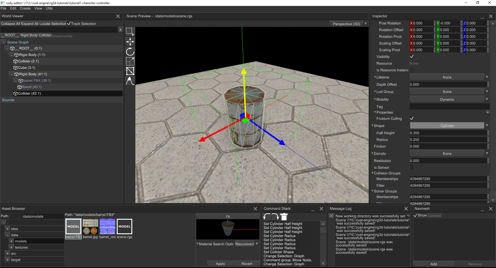
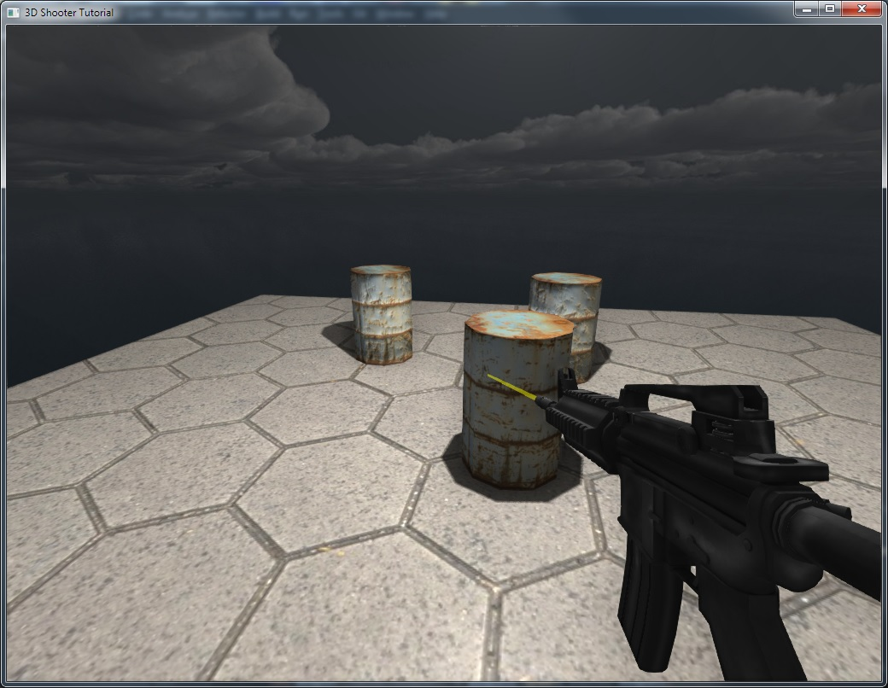

rg3d Cheat/Guide Book
Practical reference and user guides for rg3d game engine and rusty-editor.
The book is in early development stage, you can help to improve it by making a contribution in its repository. Don't be shy, every tip is helpful!
How to read the book
Almost every chapter in this book can be read in any order, but we recommend reading Chapter 1 and then going through the First-Person Shooter Tutorial while learning more about specific areas that interest you from the other chapters.
Support the development
The future of the project fully depends on community support, every bit is important!

rg3d
rg3d is a feature-rich, general purpose game engine that is suitable for any kind of games. It is capable to power games with small- or medium-sized worlds, large-sized world most likely will require some manual work. This chapter of the book will help you to get familiar with core engine concepts and will help you start writing your first game!
Getting started
Despite the look of it, the engine is quite friendly to newcomers, especially with some good guides. This section of the book will guide you the basics of the engine.
To begin using the engine, just add following lines to your Cargo.toml:
[dependencies]
rg3d = "^0.23.1" # Please check crates.io for actual version.
Check the next chapter to create a simple application.
Framework
The engine offers special framework to start making games as quickly as possible. It cares about engine initialization, handles window events, calls every required methods and so on. In other words it helps you to get started as quickly as possible with a need to put dozens lines of code to just create a window with a game loop.
The simplest app could be created with this code:
extern crate rg3d; use rg3d::{ engine::Engine, engine::framework::prelude::*, }; struct Game { } impl GameState for Game { fn init(_engine: &mut Engine) -> Self where Self: Sized { Self { } } } fn main() { Framework::<Game>::new() .unwrap() .title("Simple") .run(); }
The "work-horse" here is the GameState trait, it offers some optional method that could be used depending on
your needs.
fn init(engine: &mut Engine) -> Self where Self: Sized- should create the instance of your game. It accepts the engine instance as the first argument which gives you full access to the engine during the initialization.fn on_tick(&mut self, engine: &mut Engine, dt: f32, control_flow: &mut ControlFlow)- the game loop, it will be called at fixed 60 FPS rate allowing you to run your game logic. The method gives you full access to the engine so you're able to work it freely. Thedtargument returns the amount of seconds that passed from the previous call. The last argument (control_flow) allowing you to change the execution flow, for example setting it toControlFlow::Exitwill force the game to quit.fn on_ui_message(&mut self, engine: &mut Engine, message: UiMessage)- the main function that listens events from the user interface and gives you the ability to react. You should handle your UI in here.fn on_device_event(&mut self, engine: &mut Engine, device_id: DeviceId, event: DeviceEvent)- the function that allows you to handle input from physical devices (mouse, keyboard, gamepads, etc.).fn on_window_event(&mut self, engine: &mut Engine, event: WindowEvent)- the function that allows you to do something when the window of the game receives an event from operating system. The variety of events is large, and everything depends on what you need. For example this method could be useful handle keyboard events.fn on_exit(&mut self, engine: &mut Engine)- the function that will be called right before your application about to shut down allowing you to do some clean up or some other actions.
As you can see it is very concise and simple, every method serves a particular purpose. The most important method is
on_tick, it the place where all your game logic will be updated. To demonstrate this, let's add simple animation:
#![allow(unused)] fn main() { extern crate rg3d; use rg3d::{ core::color::{Color, Hsv}, engine::{framework::prelude::*, Engine}, event_loop::ControlFlow, }; struct Game { hue: f32, } impl GameState for Game { fn init(_engine: &mut Engine) -> Self where Self: Sized, { Self { hue: 0.0 } } // Implement a function that will update game logic and will be called at fixed rate of 60 Hz. fn on_tick(&mut self, engine: &mut Engine, dt: f32, _: &mut ControlFlow) { // Increase hue at fixed rate of 24 degrees per second. self.hue += 24.0 * dt; // Slowly change color of the window. engine .renderer .set_backbuffer_clear_color(Color::from(Hsv::new(self.hue % 360.0, 100.0, 100.0))) } } }
This piece of code will slowly change the background color of the window going through all colors of rainbow.
Custom game loop (WIP)
The framework might be limiting for some cases, in such situations the engine could be initialized manually. It requires some decent amount of code and could error-prone for beginners. You should use custom game loop only if you're experienced game developer!
Scene and scene graph
When you're playing a game, you often see various objects scattered around on screen, all of them forming a scene. Scene is just a set of various objects, as in many other game engines, rg3d allows you to create multiple scenes for various purposes. For example, one scene could be used for menu, a bunch could be used for game levels, and one for ending screen. Scenes also could be used to create a source of data for other scenes, such scenes called prefabs. A scene could also be rendered in a texture, and the texture can be used in other scene - this way you can create interactive screens that showing some other places.
While playing games, you could've noticed that some objects behaves like they're linked to other objects, for example your character in a role-playing game could carry a sword. While the character holds the sword, it is linked to his arm. Such relations between the objects could be presented by a graph structure.
Simply speaking, graph is a set of objects with hierarchical relationships between each object. Each object in the graph is called node. In the example with the sword and the character, the sword is a child node of a character, which in its turn is a parent node of a character. (Here we intentionally omit the fact that usually character model contains complex skeleton with multiple bones and the sword is actually attached to one of hand's bones.)
Building blocks or scene nodes
The engine offers various types of "building blocks" for your scene, each such block is called scene node.
- Base - a node that stores hierarchical information (a handle to the parent node and a set of handles to children nodes), local and global transform, name, tag, lifetime, etc. It has self-describing name - it is used as a base node for every other scene node (via composition).
- Mesh - a node that represents a 3D model. This one of the most commonly used nodes in almost every game. Meshes could be easily created either programmatically, or be made in some 3D modelling software (like Blender) and loaded in your scene.
- Light - a node that represents a light source. There are three types of light sources:
- Directional - a light source that does not have position, only direction. The closest real-world example is our Sun.
- Point - a light source that emits light in every direction. Real-world example: light bulb.
- Spot - a light source that emits light in a particular direction with a cone-like shape. Real-world example: flashlight.
- Camera - a node that allows you to see the world. You must have at least one camera in your scene to be able to see anything.
- Sprite - a node that represents a quad that always faced towards a camera. It can have a texture, size, it also can be rotated around the "look" axis.
- Particle system - a node that allows you to build visual effects using a huge set of small particles, it can be used to create smoke, sparks, blood splatters, etc. effects.
- Terrain - a node that allows you to create complex landscapes with minimal effort.
- Decal - a node that paints on other nodes using a texture. It is used to simulate cracks in concrete walls, damaged parts of the road, blood splatters, bullet holes, etc.
These scene nodes allow you to build almost any kind of game.
Local and global coordinates
Graph describes your scene in a very natural way, allowing you think in terms of relative and absolute coordinates when working with scene nodes.
Scene node has two kinds of transform - local and global. Local transform defines where the node is located (translation) relative to origin, how much it is scaled (in percent) and rotated (around any arbitrary axis). Global transform is almost the same, but it also includes the whole chain of transforms of parent nodes. In the previous example with the character, the sword has its own local transform which tells how much it should be moved from origin to be exactly on a hand of the character. But global transform of the swords includes transform of the entire character. So if you move the character, the local transform of the sword will remain the same, but global transform will include the transform of the character.
This mechanism is very simple, yet powerful. The full grace of it unfolds when you're working with 3D models with skeleton, each bone in the skeleton has its parent and a set of children. You can rotate/translate/scale bones to animate your character.
Data management
The engine uses generation arenas (pools in engine's terminology) for efficient data management. Pool is a vector with entries that can be either vacant or occupied. Each entry, no matter occupied it or vacant, also stores a special number called generation. The generation number is used to understand whether an entry has been changed over time or not. When an entry is reused, its generation number is increased leaving all previously created handle leading to the entry invalid. This is a very simple and efficient algorithm for tracking the "lifetime" of the objects.
To access the data in entries, the engine uses handles. The handle is a pair of index of an entry and a generation number. When you put an object in the pool, it gives you the handle that "leads" to the object. At this moment the generation of the handle matches the generation of the corresponding entry so the handle is valid. It will remain valid util you "free" the object, which will make the entry vacant again.
Advantages
Since the pool is just a contiguous memory block, it is much more CPU cache-friendly. This means that in most cases the data portions will be loaded in CPU caches, making the access to the data blazing fast.
Almost every entity in the engine "lives" in its own pool, this make it easy to create such data structures like graphs, where a node refers to other nodes. In this case scene nodes stores just handles (which is just 8 bytes of memory) to other nodes.
Borrowing
Once an object was placed in a pool, you have to use respective handle to get a reference to it. This could
be done either with .borrow[_mut](handle) or by using Index trait: pool[handle]. These methods panic
when handle is invalid, if you want to prevent that, use try_borrow[_mut](handle) method.
Freeing
You can extract an object from a pool by calling pool.free(handle), it will give you the object back, making
all handles to the object invalid.
Take & reserve
Sometimes you may need to temporarily extract an object from a pool, do something with it and then put it back while preserving handles to that object. There are three special methods for that:
take_reserve+try_take_reserve- moves object out of the pool, but leaves the entry in "occupied" state. This function returns a tuple with two values(Ticket<T>, T). The latter value is obviously is your object, but the first object is more interesting. It is a special wrapper over object index that allows you to return the object back. It is used input_backmethod. Caveat: an attempt to borrow moved object in the pool will cause panic!put_back- moves the object back in the pool using given ticket. Ticket says where to put the object in the pool.forget_ticket- makes the entry of the pool vacant again. It is useful in situations when you've moved object out of the pool, but for some reason you don't want to return it back in pool, in this case you must call this method, otherwise the corresponding entry will be unusable.
Iterators
There are few possible iterators, each one is useful for particular purpose:
iter/iter_mut- creates an iterator that iterates over occupied pool entries returning references to an object associated with an entry.pair_iter/pair_iter_mut- creates an iterator that iterates over occupied pool entries returning tuples with two elements(handle, reference).
Direct access
There is ability to get an object from a pool using only indices, there are two methods for that at and at_mut.
Validation
Sometimes you may need to check if a handle is valid, to do that use is_valid_handle method.
Type-erased handles
The pool module offers type-erased handles that could be useful for some situations. Try to avoid using type-erased handles, because they may introduce hardly-reproducible bugs and type safety is always good :)
Type-erased handle is called ErasedHandle and it can be created either manually, or from strongly-typed handles.
Both handle types are interchangeable, you can use From and Into traits to convert them one into another.
Special
Uncategorized stuff.
Getting a handle of an object by its reference
Sometimes you may need to get a handle of an object having only a reference to it, there is a handle_of method
exactly for that.
Iterate over and discard unnecessary objects
There is a retain method for that, it allows you to "filter" your pool using a closure with custom filtering
logic.
Scene
Scene is a container for game entities. Currently, scenes in the engine manage following entities:
- Graph
- Animations
- Physics (rigid bodies, colliders, joints)
- Sound
Scene allows you to create isolated "world" which won't interact with other scenes, it is very useful for many more or less complex games.
How to create
A scene could be created either in rusty-editor or programmatically. You can also combine both approaches, where you build all "static" content in the editor and adding rest of the entities (bots, interactive objects, etc.) manually.
Using rusty-editor
There is a separate chapter in the book that should help you to create a scene.
After a scene is created, you can load it as any other 3D model using the resource manager:
#![allow(unused)] fn main() { extern crate rg3d; use rg3d::{ core::{futures::executor::block_on, pool::Handle}, engine::resource_manager::{MaterialSearchOptions, ResourceManager}, scene::{node::Node, Scene}, }; use std::path::Path; fn load_scene(resource_manager: ResourceManager) -> Scene { // Create parent scene. let mut scene = Scene::new(); // Request child scene and block until it loading. let scene_resource = block_on( resource_manager .request_model("path/to/your/scene.rgs", MaterialSearchOptions::RecursiveUp), ) .unwrap(); // Create an instance of the scene in the parent scene. let child_scene = scene_resource.instantiate_geometry(&mut scene); scene } }
Please note that here we're creating an empty scene and only then instantiating another scene into it. Why is this needed?
Short answer: child scene is considered as prefab, and it is "instantiated" in the parent scene. Considering it as prefab allows you modifying your scene separately and serialization/deserialization will be able to correctly apply any changes in the scene.
Long answer: the engine has a prefab system which allows you to build hierarchical scenes which can include any number of other scenes as child scenes. Child scenes can have their own child scenes and so on. This is very efficient decoupling mechanism that allows you to put pieces of the scene in separate scenes (prefabs) and modify them independently. The changes in child scenes will be automatically reflected to all parent scenes. Here is the very simple example of why this is important: imagine you need to populate a town with 3D models of cars. Each kind of car have its own 3D model and, for example, a collision body that won't allow the player to walk through cars. How would you do this? The simplest (and dumbest) solution is to copy dozens of car models in the scene, and you're done. Imagine that now you need to change something in your car, for example, add a trunk that can be opened. What will you do? Of course, you should "iterate" over each car model and do the required changes, you simply don't have any other option. This will eat huge amount of time and in general it is very non-productive.
This is where prefabs will save you hours of work. All you need to do is to create a car prefab and instantiate it multiple times in your scene. When you'll need to change something in the car, you simply go to the prefab and change it. After that every prefab instance will have your changes!
Create scene manually
A scene could also be created manually:
#![allow(unused)] fn main() { extern crate rg3d; use rg3d::{core::pool::Handle, engine::Engine, scene::Scene}; fn create_scene(engine: &mut Engine) -> Handle<Scene> { let mut scene = Scene::new(); // Use node builders, create sounds, add physics, etc. here to fill the scene. engine.scenes.add(scene) } }
Where all my scenes located?
All scenes "lives" in the engine, the engine has single ownership over your scene after you've added it in the engine. You can borrow a scene at any time using its handle and do some changes.
Building scene asynchronously
You can create your scene in separate thread and then pass it to main thread to insert it in the engine. Why this is needed? Remember the last time you've played a relatively large game, you've probably noticed that it have loading screens and loading screen has some fancy interactive stuff with progress bar. Loading screen is fully responsive while the game doing hard job loading the world for you. Got it already? Asynchronous scene loading is needed to create/load large scenes with tons of resources without blocking main thread, thus leaving the game fully responsive.
There is comprehensive example of asynchronous scene loading, it can be found here
Managing multiple scenes
Usually you should have only one scene active (unless you're making something very special), you should use
.enabled flag of a scene to turn it off or on. Deactivated scenes won't be rendered, the physics won't be
updated, the sound will stop, and so on. In other words the scene will be frozen. This is useful for situations
when you often need to switch between scenes, leaving other scene in frozen state. One of the examples where this
can be useful is menus. In most games when you're entering the menu, game world is paused.
Graph
Graph is a set of objects with hierarchical relationships between each object. It is one of the most important entities in the engine. Graph takes care of your scene objects and does a lot of job for you.
How to create
You don't need to create graph manually, every scene has its own instance of the graph. It can be accessed pretty
easily: scene_ref.graph
Adding nodes
There are two ways of adding nodes to the graph, either using node builders or manually, by calling graph.add_node.
Using node builders
Every node in the engine has its respective builder, which can be used to create an instance of the node. Using builders is a preferable way to create scene nodes. There are following node builders:
BaseBuilder- creates an instance of base node. See Base node for more info.CameraBuilder- creates an instance of camera node. See Camera node for more info.MeshBuilder- creates an instance of mesh node. See Mesh node for more info.LightBuilder- creates an instance of light node. See Light node for more info.SpriteBuilder- creates an instance of sprite node. See Sprite node for more info.ParticleSystemBuilder- creates an instance of particle system node. See Particle system node for more info.TerrainBuilder- creates an instance of terrain node. See Terrain node for more info.DecalBuilder- creates an instance of decal node. See Decal node for more info.
Every builder, other than BaseBuilder, accepts BaseBuilder as a parameter in .new(..) method. Why so?
This is needed, because every node (other than Base) is "derived" from Base via composition and the derived
builder must know how to build Base node. While it may sound confusing, it is actually very useful and clear.
Consider this example:
#![allow(unused)] fn main() { extern crate rg3d; use rg3d::{ core::{algebra::Vector3, pool::Handle}, scene::{ base::BaseBuilder, camera::CameraBuilder, node::Node, transform::TransformBuilder, Scene, }, }; fn create_camera(scene: &mut Scene) -> Handle<Node> { CameraBuilder::new( // Here we passing a base builder. Note that, since we can build Base node separately // we can pass any custom values to it while building. BaseBuilder::new().with_local_transform( TransformBuilder::new() .with_local_position(Vector3::new(2.0, 0.0, 3.0)) .build(), ), ) // Here we just setting desired Camera properties. .with_fov(60.0f32.to_radians()) .build(&mut scene.graph) } }
As you can see, we're creating an instance of BaseBuilder and fill it with desired properties as well as filling the CameraBuilder's instance properties. This is very flexible mechanism, allowing you to build complex hierarchies in declarative manner:
#![allow(unused)] fn main() { extern crate rg3d; use rg3d::{ core::{algebra::Vector3, pool::Handle}, scene::{ base::BaseBuilder, camera::CameraBuilder, mesh::MeshBuilder, node::Node, sprite::SpriteBuilder, transform::TransformBuilder, Scene, }, }; fn create_node(scene: &mut Scene) -> Handle<Node> { CameraBuilder::new( BaseBuilder::new() // Add some children nodes. .with_children(&[ // A staff... MeshBuilder::new( BaseBuilder::new() .with_name("MyFancyStaff") .with_local_transform( TransformBuilder::new() .with_local_position(Vector3::new(0.5, 0.5, 1.0)) .build(), ), ) .build(&mut scene.graph), // and a spell. SpriteBuilder::new( BaseBuilder::new() .with_name("MyFancyFireball") .with_local_transform( TransformBuilder::new() .with_local_position(Vector3::new(-0.5, 0.5, 1.0)) .build(), ), ) .build(&mut scene.graph), ]) .with_local_transform( TransformBuilder::new() .with_local_position(Vector3::new(2.0, 0.0, 3.0)) .build(), ), ) .with_fov(60.0f32.to_radians()) .build(&mut scene.graph) } }
This code snippet create a camera for first-person role-playing game's player, it will have a staff in "right-hand" and a spell in the left hand. Of course all of this is very simplified, but should give you the main idea. Note that staff and fireball will be children nodes of camera, and when setting their transform we're actually setting local transform which means that the transform will be relative to camera's. The staff and the spell will move together with the camera.
Adding a node manually
For some rare cases you may also want delay adding a node to the graph, specifically for that purpose, every node
builder has .build_node method which creates an instance of Node but does not add it to the graph.
#![allow(unused)] fn main() { extern crate rg3d; use rg3d::{ core::pool::Handle, scene::{base::BaseBuilder, camera::CameraBuilder, node::Node, Scene}, }; fn create_node(scene: &mut Scene) -> Handle<Node> { let node: Node = CameraBuilder::new(BaseBuilder::new()).build_node(); // We must explicitly add the node to the graph. scene.graph.add_node(node) } }
How to modify the hierarchy
For many cases you can't use builders to create complex hierarchy, the simplest example of such situation when
you're creating an instance of some 3D model. If you want the instance to be a child object of some other object,
you should attach it explicitly by using graph.link_nodes(..):
#![allow(unused)] fn main() { extern crate rg3d; use rg3d::{ core::{futures::executor::block_on, pool::Handle}, engine::resource_manager::{MaterialSearchOptions, ResourceManager}, scene::{base::BaseBuilder, camera::CameraBuilder, node::Node, Scene}, }; fn link_weapon_to_camera( scene: &mut Scene, camera: Handle<Node>, resource_manager: ResourceManager, ) { let weapon = block_on( resource_manager .request_model("path/to/weapon.fbx", MaterialSearchOptions::RecursiveUp), ) .unwrap() .instantiate_geometry(scene); // Link weapon to the camera. scene.graph.link_nodes(weapon, camera); } }
Here we've loaded a weapon 3D model, instantiated it on scene and attached to existing camera.
How to remove nodes
A node could be removed by simply calling graph.remove_node(handle), this method removes the node from the
graph with all of its children nodes. Sometimes this is unwanted behaviour, and you want to preserve children
nodes while deleting parent node. To do that you need to explicitly detach children nodes of the node you're about
to delete:
#![allow(unused)] fn main() { extern crate rg3d; use rg3d::{ core::pool::Handle, scene::{node::Node, Scene}, }; fn remove_preserve_children(scene: &mut Scene, node_to_remove: Handle<Node>) { for child in scene.graph[node_to_remove].children().to_vec() { scene.graph.unlink_node(child); } scene.graph.remove_node(node_to_remove); } }
After calling this function, every child node of node_to_remove will be detached from it and the node_to_remove
will be deleted. remove_node has some limitations: it cannot be used to extract "sub-graph" from the graph, it
just drops nodes immediately.
Base node
Base node is a scene node that stores hierarchical information (a handle to the parent node and a set of handles to children nodes), local and global transform, name, tag, lifetime, etc. It has self-describing name - it is used as a base node for every other scene node (via composition).
It has no graphical information, so it is invisible all the time, but it is useful as a "container" for children nodes.
How to create
Use the BaseBuilder to create an instance of the Base node:
#![allow(unused)] fn main() { extern crate rg3d; use rg3d::scene::{base::BaseBuilder, Scene}; fn build_node(scene: &mut Scene) { let handle = BaseBuilder::new().build(&mut scene.graph); } }
Building a complex hierarchy
To build a complex hierarchy of some nodes, use .with_children() method of the BaseBuilder, it allows you
to build a hierarchy of any complexity:
#![allow(unused)] fn main() { extern crate rg3d; use rg3d::scene::{base::BaseBuilder, camera::CameraBuilder, Scene}; fn build_node(scene: &mut Scene) { let handle = BaseBuilder::new() .with_children(&[ CameraBuilder::new(BaseBuilder::new()).build(&mut scene.graph), BaseBuilder::new() .with_children(&[BaseBuilder::new().build(&mut scene.graph)]) .build(&mut scene.graph), ]) .build(&mut scene.graph); } }
Note that when we're building a Camera instance, we're passing a new instance of BaseBuilder to it, this
instance can also be used to set some properties and a set of children nodes.
The "fluent syntax" is not mandatory to use, the above code snipped could be rewritten like this:
#![allow(unused)] fn main() { extern crate rg3d; use rg3d::scene::{base::BaseBuilder, camera::CameraBuilder, Scene}; fn build_node(scene: &mut Scene) { let camera = CameraBuilder::new(BaseBuilder::new()).build(&mut scene.graph); let child_base = BaseBuilder::new().build(&mut scene.graph); let base = BaseBuilder::new() .with_children(&[child_base]) .build(&mut scene.graph); let handle = BaseBuilder::new() .with_children(&[camera, base]) .build(&mut scene.graph); } }
However, it looks less informative, because it loses the hierarchical view and it is harder to tell the relations between objects.
Transform
Base node has a local transform that allows you to translate/scale/rotate/etc. your node as you want to. For example, to move a node at specific location you could use this:
#![allow(unused)] fn main() { extern crate rg3d; use rg3d::{ core::{algebra::Vector3, pool::Handle}, scene::{node::Node, Scene}, }; fn translate_node(scene: &mut Scene, node_handle: Handle<Node>) { scene.graph[node_handle] .local_transform_mut() .set_position(Vector3::new(1.0, 0.0, 2.0)); } }
You could also chain multiple set_x calls, like so:
#![allow(unused)] fn main() { extern crate rg3d; use rg3d::{ core::{algebra::Vector3, pool::Handle}, scene::{node::Node, Scene}, }; fn transform_node(scene: &mut Scene, node_handle: Handle<Node>) { scene.graph[node_handle] .local_transform_mut() .set_position(Vector3::new(1.0, 0.0, 2.0)) .set_scale(Vector3::new(2.0, 2.0, 2.0)) .set_rotation_offset(Vector3::new(1.0, 1.0, 0.0)); } }
Mesh node
Mesh is a scane node that represents a 3D model. This one of the most commonly used nodes in almost every game. Meshes could be easily created either programmatically, or be made in some 3D modelling software (like Blender) and loaded in your scene.
How to create
There are basically two ways, how to pick one depends your needs. In general, using a 3D modelling software is the way to go, especially with tons and tons of free 3D models available online.
Caveat: The engine supports only FBX file format for 3D models!
Using a 3D modelling software
To create 3D model in you could use Blender and then export it to FBX file format.
To load your 3D model in the game, you should do few simple steps:
#![allow(unused)] fn main() { extern crate rg3d; use rg3d::{ core::{futures::executor::block_on, pool::Handle}, engine::resource_manager::{MaterialSearchOptions, ResourceManager}, scene::{node::Node, Scene}, }; use std::path::Path; fn load_model_to_scene( scene: &mut Scene, path: &Path, resource_manager: ResourceManager, ) -> Handle<Node> { // Request model resource and block until it loading. let model_resource = block_on(resource_manager.request_model(path, MaterialSearchOptions::RecursiveUp)) .unwrap(); // Create an instance of the resource in the scene. model_resource.instantiate_geometry(scene) } }
This code snippet intentionally omits proper async/await usage (instead it just blocks current thread until
model is loading) and error handling. In the real game you should carefully handle all errors and use async/await
properly.
Creating a procedural mesh
A mesh instance could be created from code, such meshes called "procedural". They're suitable for cases when you cannot create a mesh in 3D modelling software.
#![allow(unused)] fn main() { extern crate rg3d; use rg3d::{ core::{ algebra::{Matrix4, Vector3}, parking_lot::Mutex, pool::Handle, sstorage::ImmutableString, }, engine::resource_manager::ResourceManager, material::{shader::SamplerFallback, Material, PropertyValue}, scene::{ base::BaseBuilder, mesh::{ surface::{SurfaceBuilder, SurfaceData}, MeshBuilder, }, node::Node, transform::TransformBuilder, Scene, }, }; use std::sync::Arc; fn create_procedural_mesh( scene: &mut Scene, resource_manager: ResourceManager, ) -> Handle<Node> { let mut material = Material::standard(); // Material is completely optional, but here we'll demonstrate that it is possible to // create procedural meshes with any material you want. material .set_property( &ImmutableString::new("diffuseTexture"), PropertyValue::Sampler { value: Some(resource_manager.request_texture("some_texture.jpg", None)), fallback: SamplerFallback::White, }, ) .unwrap(); // Notice the MeshBuilder. MeshBuilder::new( BaseBuilder::new().with_local_transform( TransformBuilder::new() .with_local_position(Vector3::new(0.0, -0.25, 0.0)) .build(), ), ) .with_surfaces(vec![SurfaceBuilder::new(Arc::new(Mutex::new( // Our procedural mesh will have a form of squashed cube. // A mesh can have unlimited amount of surfaces. SurfaceData::make_cube(Matrix4::new_nonuniform_scaling(&Vector3::new( 25.0, 0.25, 25.0, ))), ))) .with_material(Arc::new(Mutex::new(material))) .build()]) .build(&mut scene.graph) } }
As you can see, creating a mesh procedurally requires lots of manual work and not so easy.
Animation
Meshes have full support of bone animation, it means that you can load pretty much any model in your game, and
it will play animation with no problems. One difference that should be noted is that you should use instantiate
method instead of instantiate_geometry and then manually apply animation to the mesh in you game loop.
#![allow(unused)] fn main() { extern crate rg3d; use rg3d::resource::model::ModelInstance; use rg3d::{ core::{futures::executor::block_on, pool::Handle}, engine::resource_manager::{MaterialSearchOptions, ResourceManager}, scene::{node::Node, Scene}, }; use std::path::Path; fn load_model_to_scene( scene: &mut Scene, path: &Path, resource_manager: ResourceManager, ) -> ModelInstance { // Request model resource and block until it loading. let model_resource = block_on(resource_manager.request_model(path, MaterialSearchOptions::RecursiveUp)) .unwrap(); // Create an instance of the resource in the scene. model_resource.instantiate(scene) } fn animate(scene: &mut Scene, resource_manager: ResourceManager) { // At initialization. let ModelInstance { root, animations } = load_model_to_scene( scene, &Path::new("path/to/your/model.fbx"), resource_manager, ); // .. Somewhere in the game loop .. scene.animations[animations[0]] .get_pose() .apply(&mut scene.graph); } }
Retargetting
You don't have to store all possible animations inside a single 3D model file, instead you can store each animation in separate file and retarget it to your mesh instance when needed. This also allows you to store non-animated 3D model in separate file, and all animations in their own files.
Light node
The engine offers complex lighting system with various types of light sources.
Light types
There are three main types of light sources: directional, point, and spot lights.
Directional light
Directional light does not have a position, its rays are always parallel,and it has a particular direction in space. An example of directional light in real-life could be our Sun. Even if it is a point light, it is so far away from the Earth, so we can assume that its rays are always parallel. Directional light sources are suitable for outdoor scenes.
A directional light source could be created something like this:
#![allow(unused)] fn main() { extern crate rg3d; use rg3d::{ core::pool::Handle, scene::{ base::BaseBuilder, light::{directional::DirectionalLightBuilder, BaseLightBuilder}, node::Node, Scene, }, }; fn create_directional_light(scene: &mut Scene) -> Handle<Node> { DirectionalLightBuilder::new(BaseLightBuilder::new(BaseBuilder::new())) .build(&mut scene.graph) } }
By default, the light source will be oriented to lit "the ground". In other words its direction will be faced towards
(0.0, -1.0, 0.0) vector. You can rotate it as you want by setting local transform of it while building. Something
like this:
#![allow(unused)] fn main() { extern crate rg3d; use rg3d::{ core::{ algebra::{UnitQuaternion, Vector3}, pool::Handle, }, scene::{ base::BaseBuilder, light::{directional::DirectionalLightBuilder, BaseLightBuilder}, node::Node, transform::TransformBuilder, Scene, }, }; fn create_directional_light(scene: &mut Scene) -> Handle<Node> { DirectionalLightBuilder::new(BaseLightBuilder::new( BaseBuilder::new().with_local_transform( TransformBuilder::new() .with_local_rotation(UnitQuaternion::from_axis_angle( &Vector3::x_axis(), -45.0f32.to_radians(), )) .build(), ), )) .build(&mut scene.graph) } }
Point light
Point light is a light source that emits lights in all directions, it has a position, but does not have an orientation. An example of a point light source: light bulb.
#![allow(unused)] fn main() { extern crate rg3d; use rg3d::{ core::pool::Handle, scene::{ base::BaseBuilder, light::{point::PointLightBuilder, BaseLightBuilder}, node::Node, Scene, }, }; fn create_point_light(scene: &mut Scene) -> Handle<Node> { PointLightBuilder::new(BaseLightBuilder::new(BaseBuilder::new())) .with_radius(5.0) .build(&mut scene.graph) } }
Spotlight
Spot light is a light source that emits lights in cone shape, it has a position and orientation. An example of a spot light source: flashlight.
#![allow(unused)] fn main() { extern crate rg3d; use rg3d::{ core::pool::Handle, scene::{ base::BaseBuilder, light::{spot::SpotLightBuilder, BaseLightBuilder}, node::Node, Scene, }, }; fn create_spot_light(scene: &mut Scene) -> Handle<Node> { SpotLightBuilder::new(BaseLightBuilder::new(BaseBuilder::new())) .with_distance(5.0) .with_hotspot_cone_angle(50.0f32.to_radians()) .with_falloff_angle_delta(10.0f32.to_radians()) .build(&mut scene.graph) } }
Light scattering
Spot and point lights supports light scattering effect. Imagine you're walking with a flashlight in a foggy weather, the fog will scatter the light from your flashlight making it, so you'll see the "light volume". Light scattering is enabled by default, so you don't have to do anything to enable it. However, in some cases you might want to disable it, you can do this either while building a light source or change light scattering options on existing light source. Here is the small example how to do that.
#![allow(unused)] fn main() { extern crate rg3d; use rg3d::{ core::pool::Handle, scene::{node::Node, Scene}, }; fn disable_light_scatter(scene: &mut Scene, light_handle: Handle<Node>) { scene.graph[light_handle] .as_light_mut() .enable_scatter(false); } }
You could also change the amount of scattering per each color channel, using this you could imitate the Rayleigh scattering:
#![allow(unused)] fn main() { extern crate rg3d; use rg3d::{ core::{algebra::Vector3, pool::Handle}, scene::{node::Node, Scene}, }; fn use_rayleigh_scattering(scene: &mut Scene, light_handle: Handle<Node>) { scene.graph[light_handle] .as_light_mut() .set_scatter(Vector3::new(0.03, 0.035, 0.055)) } }
Shadows
Spot and point lights are both supports shadows, however directional light still lacks shadows. There is a tracking issue for that.
Performance
Lights are not very cheap, every light source has some performance impact. As a general rule, try to keep amount of light sources at reasonable levels and especially try to avoid creating tons of light sources in a small area. Keep in mind that the less area the light need to "cover", the higher the performance. This means that you can have tons of small light sources almost free.
Shadows giving the most significant performance impact, you should keep amount of light sources that can cast shadows at lowest possible amount to keep performance at good levels. You can also turn on/off shadows when you need:
#![allow(unused)] fn main() { extern crate rg3d; use rg3d::{ core::pool::Handle, scene::{node::Node, Scene}, }; fn switch_shadows(scene: &mut Scene, light_handle: Handle<Node>, cast_shadows: bool) { scene.graph[light_handle] .as_light_mut() .set_cast_shadows(cast_shadows) } }
Not every light should cast shadows, for example a small light that a player can see only in a distance can have shadows disabled. You should set the appropriate values depending on your scene, just remember - the fewer shadows the more performance you'll get. The most expensive shadows are from point lights, the less - from spot lights.
Sprite
Sprite is just a quad mesh that is always facing camera. It has size, color, rotation around "look" axis and a texture. Sprites are useful mostly for projectiles, like glowing plasma, and for things that should always face a camera.
Important: It should be noted that sprites are not meant to be used for 2D games, they're only for 3D. There is a separate 2D scenes with their own nodes, which are very well optimized for 2D games.
How to create
A sprite instance could be created using SpriteBuilder:
#![allow(unused)] fn main() { extern crate rg3d; use rg3d::{ core::{color::Color, pool::Handle}, scene::{base::BaseBuilder, node::Node, sprite::SpriteBuilder, Scene}, }; fn create_sprite(scene: &mut Scene) -> Handle<Node> { SpriteBuilder::new(BaseBuilder::new()) .with_size(2.0) .with_rotation(45.0f32.to_radians()) .with_color(Color::RED) .build(&mut scene.graph) } }
A sprite with a texture could be created by using .with_texture method of the builder:
#![allow(unused)] fn main() { extern crate rg3d; use rg3d::{ core::pool::Handle, engine::resource_manager::ResourceManager, scene::{base::BaseBuilder, node::Node, sprite::SpriteBuilder, Scene}, }; fn create_sprite(scene: &mut Scene, resource_manager: ResourceManager) -> Handle<Node> { SpriteBuilder::new(BaseBuilder::new()) .with_texture(resource_manager.request_texture("path/to/your/texture.png", None)) .build(&mut scene.graph) } }
General rules
Sprites must not be used to create any visual effects, that involve many particles. You should use particle systems for that. Why so? Particles systems are very well optimized for managing huge amounts of particles at the same time, but sprites are not. Each sprite is very heavy to be used as a particle in particle systems, it has a lot of "useless" info that bloats its size up to 600 bytes.
Currently, the renderer will render each sprite in a separate draw call, which is very inefficient. So you should avoid creating lots of sprites.
Limitations
Sprites are not supporting any sort of lighting, if you need lighted sprites, you need to create your own render
pass and use Mesh node with custom shader that will orient all faces towards camera and will do lighting
calculations.
Particle system
Particle system is a scene node that is used to create complex visual effects (VFX). It operates on huge amount of particles at once allowing you to do complex simulation that involves large amount of particles. Typically, particle systems are used to create following visual effects: smoke, sparks, blood splatters, steam, etc.
Important: Current particle system implementation is not deterministic, this means that the state of the particles will be different at each run of your game. Also you cannot rewind the particle system, nor set a particular position in time. This fact limits potential usages of the particle system, however it is still useful for any effects that does not have to be deterministic, like sparks, smoke, steam, etc. This is known issue, and it will eventually be fixed by adding a new kind of particle systems. Tracking issue could be found here.
Particle system
Particle system is a scene node that is used to create complex visual effects (VFX). It operates on huge amount of particles at once allowing you to do complex simulation that involves large amount of particles. Typically, particle systems are used to create following visual effects: smoke, sparks, blood splatters, steam, etc.
Important: Current particle system implementation is not deterministic, this means that the state of the particles will be different at each run of your game. Also you cannot rewind the particle system, nor set a particular position in time. This fact limits potential usages of the particle system, however it is still useful for any effects that does not have to be deterministic, like sparks, smoke, steam, etc. This is known issue, and it will eventually be fixed by adding a new kind of particle systems. Tracking issue could be found here.
Camera node (WIP)
Decal node (WIP)
Animation (WIP)
Rendering (WIP)
Shaders
Shader is a set of programs that runs directly on graphics adapter. Each program from the set is called sub-shader. Sub-shaders linked with render pass, each render pass defines "where" to draw and an object. "where" means that you can set up your own render pass and the renderer will use the sub-shader with your render pass. For the ease of use there are number of predefined render passes.
Shaders have properties of various types that can be used together with materials to draw an object.
Shaders language
The engine uses GLSL shading language for every sub-shader. There are numerous of GLSL guides over the internet, so there is no need to "re-post" the well documented info again.
There are very few differences:
- No need to define a version of the shader. Every shader source will be pre-processed, and it will get correct version automatically. Preprocessing is needed because the same shader could run on OpenGL and WebGL (OpenGL ES) which have some differences.
- There is a "standard" library of useful methods which is automatically included in every shader source at preprocessing stage. The library source could be found here. It is well documented, and you may find some functions useful for you job.
Structure
Shader has rigid structure that could be described in this code snipped:
(
// A set of properties, there could be any amount of properties.
properties: [
(
// Each property must have a name. This name must match with respective
// uniforms! That's is the whole point of having properties.
name: "diffuseTexture",
// Value has limited set of possible variants.
value: Sampler(default: None, fallback: White)
)
],
// A set of render passes (see next section for more info)
passes: [
(
// Name must match with the name of either standard render pass (see below) or
// one of your passes.
name: "Forward",
// A set of parameters that regulate renderer pipeline state.
// This is mandatory field of each render pass.
draw_parameters: DrawParameters(
// A face to cull. Either Front or Back.
cull_face: Some(Back),
// Color mask. Defines which colors should be written to render target.
color_write: ColorMask(
red: true,
green: true,
blue: true,
alpha: true,
),
// Whether to modify depth buffer or not.
depth_write: true,
// Whether to use stencil test or not.
stencil_test: None,
// Whether to perform depth test when drawing.
depth_test: true,
// Blending options.
blend: Some(BlendFunc(
sfactor: SrcAlpha,
dfactor: OneMinusSrcAlpha,
)),
// Stencil options.
stencil_op: StencilOp(
fail: Keep,
zfail: Keep,
zpass: Keep,
write_mask: 0xFFFF_FFFF,
),
),
// Vertex shader code.
vertex_shader:
r#"
layout(location = 0) in vec3 vertexPosition;
layout(location = 1) in vec2 vertexTexCoord;
uniform mat4 rg3d_worldViewProjection;
out vec2 texCoord;
void main()
{
texCoord = vertexTexCoord;
gl_Position = rg3d_worldViewProjection * vertexPosition;
}
"#;
// Pixel shader code.
pixel_shader:
r#"
// Note that the name of this uniform match the name of the property up above.
uniform sampler2D diffuseTexture;
out vec4 FragColor;
in vec2 texCoord;
void main()
{
FragColor = diffuseColor * texture(diffuseTexture, texCoord);
}
"#;
)
],
)
Properties
Property is a named variable of some type. Properties directly tied with the uniforms in the sub-shaders,
for each you can have a property called time, and then you can define uniform float time; in your sub-shader
and the engine will pass property value to that uniform for you before drawing an object. Properties placed in
a "global namespace", which means that every sub-shader have "access" to the properties.
Built-in properties
There are number of built-in properties, the full list is available here
Predefined render passes
Predefined render passes helps you to create your own shader without a need to create your own render pass and to quickly start writing your shaders.
- GBuffer - A pass that fills a set with render target sized textures with various data about each rendered object. These textures then are used for physically-based lighting. Use this pass when you want the standard lighting to work with your objects.
- Forward - A pass that draws an object directly in render target. This pass is very limiting, it does not support lighting, shadows, etc. It should be only used to render translucent objects.
- SpotShadow - A pass that emits depth values for an object, later this depth map will be used to render shadows.
- PointShadow - A pass that emits distance from a fragment to a point light, later this depth map will be used to render shadows.
Drawing parameters
Drawing parameters defines which GPU functions to use and at which state. For example, to render transparent objects you need to enable blending with specific blending rules. Or you need to disable culling to draw objects from both sides. This is when draw parameters comes in handy. There are relatively large list of drawing parameters, and it could confuse a person who didn't get used to work with graphics. Thankfully there is a good documentation about this available here
Vertex shader
Vertex shader operates on single vertices, it must provide at least the position of the vertex in clipping space. In other words it has to do at least this:
layout(location = 0) in vec3 vertexPosition;
uniform mat4 rg3d_worldViewProjection; // Note the built-in variable.
void main()
{
gl_Position = rg3d_worldViewProjection * vertexPosition;
}
This is the simplest vertex shader, using vertex shaders you can create various graphical effects that affects vertices.
Pixel Shader
Pixel shader (or more precisely - fragment shader), operates on a small fragment of your render target. In general pixels shaders just writes some color to a render target (or multiple targets) using some program.
out vec4 FragColor;
void main()
{
FragColor = vec4(1, 0, 0, 1);
}
This is the simplest pixel shader, it just fills the render target with red color.
Materials
Material defines a set of values for a shader. Materials usually contains textures (diffuse, normal, height, emission, etc. maps), numerical values (floats, integers), vectors, booleans, matrices and arrays of each type, except textures. Each parameter can be changed in runtime giving you the ability to create animated materials. However, in practice, most materials are static, this means that once it created, it won't be changed anymore.
Please keep in mind that the actual "rules" of drawing an entity are stored in the shader, material is only a storage for specific uses of the shader.
Multiple materials can share the same shader, for example standard shader covers 95% of most common use cases, and it is shared across multiple materials. The only difference are property values, for example you can draw multiple cubes using the same shader, but with different textures.
Material itself can be shared across multiple places as well as the shader. This gives you the ability to render multiple objects with the same material efficiently.
Performance
It is very important re-use materials as much as possible, because the amount of materials used per frame significantly correlates with performance. The more unique materials you have per frame, the more work has to be done by the renderer and video driver to render a frame and the more time the frame will require for rendering, thus lowering your FPS.
Standard material
The engine offers a standard PBR material, PBR stands for "Physically-Based Rendering" which gives you the quality of shading which is very close to materials in real world (to some extent of course).
The standard material can cover 95% of use cases, and it is suitable for almost any kind of game, except maybe some cartoon-ish or stylized games.
The standard material has quite a lot of properties that can be used to fully utilize the power of PBR rendering:
- diffuseColor - an RGBA color that will be used as a base color for you object. Caveat: the opacity value
(alpha) will be used only with
Forwardrender path! This means that you will need to switch render path on your mesh (see below) - diffuseTexture - a 2D texture containing the unlit "basic" colors of your object, this is the most commonly used texture. For example, you can assign a brick wall texture to this property and your object will look a brick wall.
- normalTexture - a 2D texture containing per-pixel normal vectors.
- metallicTexture - a 2D texture containing per-pixel metallic factor, where 0 - dielectric, 1 - metal. In simple words it defines will your object reflect (1.0) the environment or not (0.0).
- roughnessTexture - a 2D texture containing per-pixel roughness factor, where 0 - completely flat, 1 - very rough.
- heightTexture - a 2D texture containing per-pixel displacement value, it is used with parallax mapping to crate an effect of volume on a flat surface.
- emissionTexture - a 2D texture containing per-pixel emission lighting. You could use this to create emissive surfaces like small lamps on wall of sci-fi ship, or to create glowing eyes for your monsters that will scare the player.
- lightmapTexture - a 2D texture containing per-pixel static lighting. It is used to apply precomputed light to your 3D models, and the most common use case is to lit a static object using a static light. Precomputed light is very cheap. The engine offers built-in lightmapper that can generated lightmaps for you.
- aoTexture - a 2D texture containing per-pixel shading values, allows you to "bake" shadows in for your 3D object.
- texCoordScale - a 2D vector that allows you to scale texture coordinates used to sample the textures mentioned above (expect lightmaps, they're using separate texture coordinates)
- layerIndex - a natural number that is used for decals masking, a decal will only be applied to your mesh iff the decal has matching index.
- emissionStrength - a 3D vector that allows you to set the strength of emission per-channel (R, G, B) for
your
emissionTexture
Transparency
The standard material offers very basic transparency support, to use it you have to explicitly switch render path on you mesh object. It could be done something like this:
#![allow(unused)] fn main() { extern crate rg3d; use rg3d::{ core::pool::Handle, scene::{mesh::RenderPath, node::Node, Scene}, }; fn set_forward_render_path(scene: &mut Scene, mesh_handle: Handle<Node>) { scene.graph[mesh_handle] .as_mesh_mut() .set_render_path(RenderPath::Forward); } }
After this your mesh will be rendered using specialized render pass called Forward which supports alpha-blending and transparent objects. Caveat: Current forward renderer implementation does not support any kind of lighting, if you need lighting, you will need to use custom shader for that!
Material import
When you're loading a 3D model in the engine, the engine tries to convert the materials stored inside to standard material. In most cases there is no way to create 100% matching material on the fly, instead the engine tries to its best to make sure the material will be imported as closely as possible to the original. Various 3D modelling tools uses different material system, but all of them allowing you to export your 3D model in one of the commonly used formats (such as FBX).
Blender
When using Blender, make sure you using Principled BSDF material, it is the closest material that can be converted to engine's standard material at almost 100% fidelity.
3Ds max
It highly depends on the version of the 3Ds max, but in general the default material should work fine.
Sound (WIP)
Physics (WIP)
User Interface
rg3d features an extremely powerful and flexible node-based user interface system. Power and flexibility comes with a certain price: it has a steep learning curve. This chapter will cover user interface usage in the engine, explain basic concepts, provide information about most commonly used widgets, and so on.
Basic concepts
This chapter should help you understand basic concepts lying in the foundation of the GUI in the engine.
Stateful
*Stateful UI means that we can create and destroy widgets when we need to, it is the opposite approach of immediate-mode or stateless UIs when you don't have long-lasting state for your widgets (usually stateless UI hold its state only for one or two frames).
Stateful UI is much more powerful and flexible, it allows you to have complex layout system without having to create hacks to create complex layout as you'd do in immediate-mode UIs. It is also much faster in terms of performance.
Stateful UI is a must for complex user interfaces that requires rich layout and high performance. I'm not telling that you can't do it in immediate mode UI, you can, but using tons of hacks. See Layout section for more info.
Node-based architecture
Every user interface could be represented as a set of small blocks that have hierarchical bonding between each other. For example a button could be represented using two parts: a background and a foreground. Usually the background is just a simple rectangle (either a vector or bitmap), and a foreground is a text. The text (the foreground widget) is a child object of the rectangle (the background widget). These two widgets forms another, more complex widget that we call button. Graphically it will look like this:

On the right side of the image we can see the generic button and on the left side, we can see its hierarchical structure. Such approach allows us to modify the look of the button as we wish, we can create a button with image background, or with any vector image, or even other widgets. The foreground can be anything too, it can also contain its own complex hierarchy, like a pair of an icon with a text and so on.
Message passing
The engine uses message passing mechanism for any UI logic. What does that mean? Let's see at the button from the previous section and imagine we want to change its text. To do that we need to explicitly "tell" the button's text widget to change its content to something new. This is done by sending a message to the widget.
Message routing strategies
Message passing mechanism works in pair with various routing strategies that allows you to define how the message will "travel" across the tree of nodes.
- Bubble - a message starts its way from a widget and goes up on hierarchy until it reaches root node of hierarchy. Nodes that lies outside that path won't receive the message. This is the most important message routing strategy, that is used for every node by default.
- Direct - a message passed directly to every node that are capable to handle it. There is actual routing in this case. Direct routing is used in rare cases when you need to catch a message outside its normal "bubble" route.
Layout
The engine uses very complex, yet powerful layout system that allows you to build complex user interfaces with complex layout. Layout pass has two recursive sub-passes:
- Measurement - the sub-pass is used to fetch the desired size of each node in hierarchy.
- Arrangement - the sub-pass is used to set final position and size of each node in hierarchy.
Such split is required because we need to know desired size of each node in hierarchy before we can actually do an arrangement.
Setting up
The user interface in the engine is extremely powerful, it allows you to build user interfaces of any complexity with low effort. To start off we will use the simplest framework:
extern crate rg3d; use rg3d::{ engine::{framework::prelude::*, Engine}, gui::message::UiMessage }; struct Game { // Empty for now } impl GameState for Game { fn init(engine: &mut Engine) -> Self where Self: Sized, { // Build context will be used in the next chapters. let ctx = &mut engine.user_interface.build_ctx(); // // All widgets will be created here in the next chapters. // Self { } } fn on_ui_message(&mut self, engine: &mut Engine, message: UiMessage) { // // Here we'll handle messages from user interface. // } } fn main() { Framework::<Game>::new() .unwrap() .title("User Interface") .run(); }
This will be the basis for all next chapters. The most important places marked with respective comments.
General rules
This chapter covers general rules that will help you to write code that will be easy to understand.
Fluent syntax
Widget builders supports fluent syntax, this means that you can create your widget in series of nested call of other widget builders. In code, it looks something like this:
#![allow(unused)] fn main() { extern crate rg3d; use rg3d::{ core::pool::Handle, engine::resource_manager::ResourceManager, gui::{ button::ButtonBuilder, image::ImageBuilder, widget::WidgetBuilder, UiNode, UserInterface, }, utils::into_gui_texture, }; fn create_fancy_button(ui: &mut UserInterface, resource_manager: ResourceManager) -> Handle<UiNode> { let ctx = &mut ui.build_ctx(); ButtonBuilder::new(WidgetBuilder::new()) .with_back( ImageBuilder::new(WidgetBuilder::new()) .with_texture(into_gui_texture( resource_manager.request_texture("path/to/your/texture", None), )) .build(ctx), ) .with_text("Click me!") .build(ctx) } }
This code snippet creates a button with an image and a text. Actually it creates three widgets, that forms
complex hierarchy. The topmost widget in hierarchy is the Button widget itself, it has two children widgets:
background image and a text. Background image is set explicitly by calling image widget builder with specific
texture. The text is created implicitly, the button builder creates Text widget for you and attaches it to
the button. The structure of the button can contain any amount of nodes, for example you can create a button
that contains text with some icon. To do that, replace .with_text("My Button") with this:
#![allow(unused)] fn main() { extern crate rg3d; use rg3d::{ core::pool::Handle, engine::resource_manager::ResourceManager, gui::{ button::ButtonBuilder, grid::{Column, GridBuilder, Row}, image::ImageBuilder, text::TextBuilder, widget::WidgetBuilder, UiNode, UserInterface, }, utils::into_gui_texture, }; fn create_fancy_button( ui: &mut UserInterface, resource_manager: ResourceManager, ) -> Handle<UiNode> { let ctx = &mut ui.build_ctx(); ButtonBuilder::new(WidgetBuilder::new()) .with_content( GridBuilder::new( WidgetBuilder::new() .with_child( ImageBuilder::new(WidgetBuilder::new().on_column(0)) .with_texture(into_gui_texture( resource_manager.request_texture("your_icon", None), )) .build(ctx), ) .with_child( TextBuilder::new(WidgetBuilder::new().on_column(1)) .with_text("My Button") .build(ctx), ), ) .add_row(Row::stretch()) .add_column(Column::auto()) .add_column(Column::stretch()) .build(ctx), ) .build(ctx) } }
Quite often you need to store a handle to a widget in a variable, there is one neat trick to do that preserving the fluent syntax:
#![allow(unused)] fn main() { extern crate rg3d; use rg3d::{ core::pool::Handle, engine::resource_manager::ResourceManager, gui::{ button::ButtonBuilder, image::ImageBuilder, widget::WidgetBuilder, UiNode, UserInterface, }, utils::into_gui_texture, }; fn create_fancy_button(ui: &mut UserInterface, resource_manager: ResourceManager) -> Handle<UiNode> { let ctx = &mut ui.build_ctx(); let image; ButtonBuilder::new(WidgetBuilder::new()) .with_back({ image = ImageBuilder::new(WidgetBuilder::new()) .with_texture(into_gui_texture( resource_manager.request_texture("path/to/your/texture", None), )) .build(ctx); image }) .with_text("Click me!") .build(ctx) } // image now contains a handle of the Image widget }
Should I create a custom widget or use composition of other widgets?
The answer depends on the use case, but the general rules here is quite simple:
- If your widget exist in a single instance, then there is no need to create a custom widget for it.
- If you need to create multiple instances of your widget, and each widget will carry some specific data, then you definitely need a custom widget.
Custom widgets have some limitations that could be limiting, one of them is that custom widgets do not have access to your code, since they're "living" inside UI and know nothing about the "environment" where they're being used.
Font (WIP)
Theme
The engine has an ability to customize the look of widgets, however it is not centralized, and has to be done
per widget. Check Theme section of each widget.
Widgets (WIP)
Button
Simple button with text
To create a simple button with text you should do something like this:
#![allow(unused)] fn main() { extern crate rg3d; use rg3d::{ core::pool::Handle, gui::{button::ButtonBuilder, widget::WidgetBuilder, UiNode, UserInterface}, }; fn create_button(ui: &mut UserInterface) -> Handle<UiNode> { ButtonBuilder::new(WidgetBuilder::new()) .with_text("Click me!") .build(&mut ui.build_ctx()) } }
A button with image
More fancy-looking button with an image as a background could be created using this code snippet:
#![allow(unused)] fn main() { extern crate rg3d; use rg3d::{ core::pool::Handle, engine::resource_manager::ResourceManager, gui::{ button::ButtonBuilder, image::ImageBuilder, widget::WidgetBuilder, UiNode, UserInterface, }, utils::into_gui_texture, }; fn create_fancy_button(ui: &mut UserInterface, resource_manager: ResourceManager) -> Handle<UiNode> { let ctx = &mut ui.build_ctx(); ButtonBuilder::new(WidgetBuilder::new()) .with_back( ImageBuilder::new(WidgetBuilder::new()) .with_texture(into_gui_texture( resource_manager.request_texture("path/to/your/texture", None), )) .build(ctx), ) .with_text("Click me!") .build(ctx) } }
Message handling
When clicked, a button sends a ButtonMessage::Click message, you can catch it in your code and do something
useful:
#![allow(unused)] fn main() { extern crate rg3d; use rg3d::{ core::pool::Handle, engine::{framework::GameState, Engine}, gui::{ button::ButtonBuilder, message::{ButtonMessage, UiMessage, UiMessageData}, widget::WidgetBuilder, UiNode, }, }; struct Game { button: Handle<UiNode>, } impl GameState for Game { // ... fn init(engine: &mut Engine) -> Self where Self: Sized, { Self { button: ButtonBuilder::new(WidgetBuilder::new()) .with_text("Click me!") .build(&mut engine.user_interface.build_ctx()), } } fn on_ui_message(&mut self, engine: &mut Engine, message: UiMessage) { if let UiMessageData::Button(ButtonMessage::Click) = message.data() { if message.destination() == self.button { // // Insert your code clicking handling code here. // } } } } }
Border
To create a simple thick border you should do something like this:
#![allow(unused)] fn main() { extern crate rg3d; use rg3d::{ core::pool::Handle, gui::{button::ButtonBuilder, widget::WidgetBuilder, border::BorderBuilder, UiNode, Thickness, UserInterface}, }; fn create_border_with_button(ui: &mut UserInterface) -> Handle<UiNode> { BorderBuilder::new(WidgetBuilder::new() .with_child( ButtonBuilder::new(WidgetBuilder::new()) .with_text("Click me") .build(&mut ui.build_ctx()), ) ) .with_stroke_thickness(Thickness {left: 1.0, right: 1.0, top: 1.0, bottom: 1.0}) .build(&mut ui.build_ctx()) } }
BorderBuilder is a completely static item that only helps to beautify the widgets around it, it doesnt have many usages.
// FIXME
Canvas (WIP)
Check box
Checkbox is a UI widget that have three states - Checked, Unchecked and Undefined. In most cases it is used
only with two values which fits in bool type. Third, undefined, state is used for specific situations when your
data have such state.
How it looks
Checkbox in Checked state:

Checkbox in Unchecked state:

How to create
To create a checkbox you should do something like this:
#![allow(unused)] fn main() { extern crate rg3d; use rg3d::{ core::pool::Handle, gui::{check_box::CheckBoxBuilder, widget::WidgetBuilder, UiNode, UserInterface}, }; fn create_checkbox(ui: &mut UserInterface) -> Handle<UiNode> { CheckBoxBuilder::new(WidgetBuilder::new()) // A custom value can be set during initialization. .checked(Some(true)) .build(&mut ui.build_ctx()) } }
The above code will create a checkbox without any textual info, but usually checkboxes have some useful info
near them. To create such checkbox, you could use .with_content(..) method which accepts any widget handle.
For checkbox with text, you could use TextBuilder to create textual content, for checkbox with text - use
ImageBuilder. As already said, you're free to use any widget handle there.
Here's an example of checkbox with textual content.
#![allow(unused)] fn main() { extern crate rg3d; use rg3d::{ core::pool::Handle, gui::{ check_box::CheckBoxBuilder, text::TextBuilder, widget::WidgetBuilder, UiNode, UserInterface, }, }; fn create_checkbox(ui: &mut UserInterface) -> Handle<UiNode> { let ctx = &mut ui.build_ctx(); CheckBoxBuilder::new(WidgetBuilder::new()) // A custom value can be set during initialization. .checked(Some(true)) .with_content( TextBuilder::new(WidgetBuilder::new()) .with_text("This is a checkbox") .build(ctx), ) .build(ctx) } }
Message handling
Checkboxes are not static widget and have multiple states. To handle a message from a checkbox, you need to handle
a CheckBoxMessage::Check message. To do so, you can do something like this:
#![allow(unused)] fn main() { extern crate rg3d; use rg3d::{ core::pool::Handle, engine::{framework::GameState, Engine}, gui::{ check_box::CheckBoxBuilder, message::{CheckBoxMessage, UiMessage, UiMessageData}, widget::WidgetBuilder, UiNode, }, }; struct Game { checkbox: Handle<UiNode>, } impl GameState for Game { // ... fn init(engine: &mut Engine) -> Self where Self: Sized, { Self { checkbox: CheckBoxBuilder::new(WidgetBuilder::new()) .build(&mut engine.user_interface.build_ctx()), } } fn on_ui_message(&mut self, engine: &mut Engine, message: UiMessage) { if let UiMessageData::CheckBox(CheckBoxMessage::Check(value)) = message.data() { if message.destination() == self.checkbox { // // Insert your clicking handling code here. // } } } } }
Keep in mind that checkbox (as any other widget) generates WidgetMessage instances. You can catch them too and
do a custom handling if you need.
Theme
Checkbox can be fully customized to have any look you want, there are few methods that will help you with customization:
.with_content(..)- sets the content that will be shown near the checkbox..with_check_mark(..)- sets the widget that will be used as checked icon..with_uncheck_mark(..)- sets the widget that will be used as unchecked icon..with_undefined_mark(..)- sets the widget that will be used as undefined icon.
Curve editor (WIP)
Decorator (WIP)
Docking manager (WIP)
Dropdown list (WIP)
Expander (WIP)
File browser (WIP)
Grid (WIP)
Image (WIP)
Inspector (WIP)
List view (WIP)
Menu (WIP)
Message box (WIP)
Numeric field (WIP)
Popup (WIP)
Progress bar (WIP)
Range (WIP)
Rect editor (WIP)
Scroll bar (WIP)
Scroll panel (WIP)
Scroll viewer (WIP)
Stack panel (WIP)
Tab control (WIP)
Text
Text is a simple widget that allows you to print text on screen. It has various options like word wrapping, text alignment, and so on.
How to create
An instance of the Text widget could be created like so:
#![allow(unused)] fn main() { extern crate rg3d; use rg3d::{ core::pool::Handle, gui::{text::TextBuilder, widget::WidgetBuilder, UiNode, UserInterface}, }; fn create_text(ui: &mut UserInterface, text: &str) -> Handle<UiNode> { TextBuilder::new(WidgetBuilder::new()) .with_text(text) .build(&mut ui.build_ctx()) } }
Text alignment and word wrapping
There are various text alignment options for both vertical and horizontal axes. Typical alignment values are:
Left, Center, Right for horizontal axis, and Top, Center, Bottom for vertical axis. An instance of
centered text could be created like so:
#![allow(unused)] fn main() { extern crate rg3d; use rg3d::{ core::pool::Handle, gui::{ text::TextBuilder, widget::WidgetBuilder, HorizontalAlignment, UiNode, UserInterface, VerticalAlignment, }, }; fn create_centered_text(ui: &mut UserInterface, text: &str) -> Handle<UiNode> { TextBuilder::new(WidgetBuilder::new()) .with_horizontal_text_alignment(HorizontalAlignment::Center) .with_vertical_text_alignment(VerticalAlignment::Center) .with_text(text) .build(&mut ui.build_ctx()) } }
Long text is usually needs to wrap on available bounds, there are three possible options for word wrapping:
NoWrap, Letter, Word. An instance of text with word-based wrapping could be created like so:
#![allow(unused)] fn main() { extern crate rg3d; use rg3d::{ core::pool::Handle, gui::{ formatted_text::WrapMode, text::TextBuilder, widget::WidgetBuilder, UiNode, UserInterface, }, }; fn create_text_with_word_wrap(ui: &mut UserInterface, text: &str) -> Handle<UiNode> { TextBuilder::new(WidgetBuilder::new()) .with_wrap(WrapMode::Word) .with_text(text) .build(&mut ui.build_ctx()) } }
Fonts and colors
To set a color of the text just use .with_foreground(..) of the WidgetBuilder while building the text instance:
#![allow(unused)] fn main() { extern crate rg3d; use rg3d::{ core::{color::Color, pool::Handle}, gui::{brush::Brush, text::TextBuilder, widget::WidgetBuilder, UiNode, UserInterface}, }; fn create_text(ui: &mut UserInterface, text: &str) -> Handle<UiNode> { // vvvvvvvvvvvvvvvvvvvvvvvvvvvvvvvvvvvvvvvvvvvvvvvvvvvvvvvvvvvvv TextBuilder::new(WidgetBuilder::new().with_foreground(Brush::Solid(Color::RED))) .with_text(text) .build(&mut ui.build_ctx()) } }
By default, text is created with default font, however it is possible to set any custom font:
#![allow(unused)] fn main() { extern crate rg3d; use rg3d::{ core::{futures::executor::block_on, pool::Handle}, gui::{ text::TextBuilder, ttf::{Font, SharedFont}, widget::WidgetBuilder, UiNode, UserInterface, }, }; fn load_font() -> SharedFont { // Choose desired character set, default is Basic Latin + Latin Supplement. // Character set is a set of ranges with Unicode code points. let character_set = Font::default_char_set(); // Normally `block_on` should be avoided. let font = block_on(Font::from_file( "path/to/your/font.ttf", 24.0, character_set, )) .unwrap(); SharedFont::new(font) } fn create_text(ui: &mut UserInterface, text: &str) -> Handle<UiNode> { TextBuilder::new(WidgetBuilder::new()) .with_font(load_font()) .with_text(text) .build(&mut ui.build_ctx()) } }
Font size
There is no way to change font size without changing the entire font used by Text, it is known issue and there is tracking issue for that.
Messages
There are few message types that Text widget can produce, most common are Text, Wrap, Font, VerticalAlignment,
and HorizontalAlignment. An example of changing text at runtime could be something like this:
#![allow(unused)] fn main() { extern crate rg3d; use rg3d::{ core::pool::Handle, gui::{ message::{MessageDirection, TextMessage}, UiNode, UserInterface, }, }; fn request_change_text(ui: &UserInterface, text_widget_handle: Handle<UiNode>, text: &str) { ui.send_message(TextMessage::text( text_widget_handle, MessageDirection::ToWidget, text.to_owned(), )) } }
Please keep in mind, that like any other situation when you "changing" something via messages, you should remember
that the change is not immediate. The change will be applied on ui.poll_message(..) call somewhere in your
code (or will be done automatically if you're using Framework).
Text box (WIP)
Tree (WIP)
Vector image (WIP)
Creating a Window
To create a window you should do something like this:
#![allow(unused)] fn main() { extern crate rg3d; use rg3d::{ core::{pool::Handle, algebra::Vector2}, gui::{window::{WindowBuilder, WindowTitle}, widget::WidgetBuilder, UiNode, UserInterface}, }; fn create_window(ui: &mut UserInterface) { WindowBuilder::new( WidgetBuilder::new() .with_desired_position(Vector2::new(300.0, 0.0)) .with_width(300.0), ) .with_content( Handle::NONE ) .with_title(WindowTitle::text("Window")) .can_close(true) .can_minimize(true) .open(true) .can_resize(false) .build(&mut ui.build_ctx()); } }
Something to point out is the .with_desired_position. Its default position is the top-left of the screen. Also the .with_content should start with a GridBuilder if you plan to add more then one widget. The rest is human readable and shouldn't need to be explained.
Window is editable object but can only be affected by UI Messages if their corresponding variable has been set to true.
Wrap panel (WIP)
Resource management
This chapter covers resource management in the engine.
Model resources
Supported formats
rg3d supports these file formats for 3D models:
- FBX
- RGS - native scenes format produced by rusty-editor
Tips for Blender
Blender's FBX exporter has exporting scale properties usually set to 100%, this may lead to incorrect scale
of your model in the engine. It will have (100.0, 100.0, 100.0) scale which is very huge. To fix that, set
the scale in the exporter to 0.01.
Textures (WIP)
Sound Buffers
Tutorials
The book offers a set of tutorials of how to write a game of specific genre using the engine. Every tutorial starts from mild difficulty and keep increasing the difficulty until the end. All tutorials are very well structured and you shouldn't be able to lost in them.
First-Person Shooter Tutorial
In this tutorial we'll make a 3D shooter - something similar to rusty-shooter. Also, the series should help you to learn basic principles which lies in the foundation of the engine.
rg3d and rusty-editor version
rg3d changes rapidly and tutorial's code could not compile with the newest versions of the engine, to prevent that and keep the code compilable over time the versions of both the engine and the editor are set to specific commits in the main repo.
rg3d version: specific commit (5564b6e)
rusty-editor version: specific commit (ca0da2e)
Source code: GitHub
FPS Tutorial Part 1 - Character Controller.
Source code: GitHub
Table of contents
- Introduction
- Creating a window
- Creating your first scene
- Using the scene
- Character controller
- Finishing touch
- Conclusion
Introduction
rg3d is a general purpose 3D engine, it allows creating any kind of 3D game, but today we'll focus on classic 3D shooter. In this tutorial we'll write a simple character controller. This is what we're aiming for:
Let's start by creating a new cargo project, make a folder and execute this:
cargo init --bin
Open Cargo.toml and add rg3d dependency:
[dependencies]
# Use specific version from GitHub, because engine changes rapidly and we must use specific version
# to make sure it compiles.
rg3d = { git = "https://github.com/rg3dengine/rg3d", rev = "a3c3d678c361aa72fc44c36f3e37adc20a54f311" }
Creating a window
Great! Now we can start writing the game. Let's start from something very simple - a window and a main loop. Just copy
and paste this code in the main.rs:
extern crate rg3d; use rg3d::{ core::{ algebra::{UnitQuaternion, Vector3}, pool::Handle, }, engine::{ resource_manager::{MaterialSearchOptions, ResourceManager}, Engine, }, event::{DeviceEvent, ElementState, Event, VirtualKeyCode, WindowEvent}, event_loop::{ControlFlow, EventLoop}, physics3d::{ rapier::{dynamics::RigidBodyBuilder, geometry::ColliderBuilder}, RigidBodyHandle, }, resource::texture::TextureWrapMode, scene::{ base::BaseBuilder, camera::{CameraBuilder, SkyBox, SkyBoxBuilder}, node::Node, transform::TransformBuilder, Scene, }, window::WindowBuilder, }; use std::time; // Our game logic will be updated at 60 Hz rate. const TIMESTEP: f32 = 1.0 / 60.0; struct Game { // Empty for now. } impl Game { pub fn new() -> Self { Self {} } pub fn update(&mut self) { // Game logic will be placed here. } } fn main() { // Configure main window first. let window_builder = WindowBuilder::new().with_title("3D Shooter Tutorial"); // Create event loop that will be used to "listen" events from the OS. let event_loop = EventLoop::new(); // Finally create an instance of the engine. let mut engine = Engine::new(window_builder, &event_loop, false).unwrap(); // Initialize game instance. It is empty for now. let mut game = Game::new(); // Run the event loop of the main window. which will respond to OS and window events and update // engine's state accordingly. Engine lets you to decide which event should be handled, // this is a minimal working example of how it should be. let clock = time::Instant::now(); let mut elapsed_time = 0.0; event_loop.run(move |event, _, control_flow| { match event { Event::MainEventsCleared => { // This main game loop - it has fixed time step which means that game // code will run at fixed speed even if renderer can't give you desired // 60 fps. let mut dt = clock.elapsed().as_secs_f32() - elapsed_time; while dt >= TIMESTEP { dt -= TIMESTEP; elapsed_time += TIMESTEP; // Run our game's logic. game.update(); // Update engine each frame. engine.update(TIMESTEP); } // Rendering must be explicitly requested and handled after RedrawRequested event is received. engine.get_window().request_redraw(); } Event::RedrawRequested(_) => { // Render at max speed - it is not tied to the game code. engine.render().unwrap(); } Event::WindowEvent { event, .. } => match event { WindowEvent::CloseRequested => *control_flow = ControlFlow::Exit, WindowEvent::KeyboardInput { input, .. } => { // Exit game by hitting Escape. if let Some(VirtualKeyCode::Escape) = input.virtual_keycode { *control_flow = ControlFlow::Exit } } WindowEvent::Resized(size) => { // It is very important to handle Resized event from window, because // renderer knows nothing about window size - it must be notified // directly when window size has changed. engine.set_frame_size(size.into()).unwrap(); } _ => (), }, _ => *control_flow = ControlFlow::Poll, } }); }
Wow! There is lots of code for such a simple task. Fear not, everything here is pretty straightforward, let's dive into this code and disassemble it line by line. Just skip imports, it's too boring. Let's look at this line:
#![allow(unused)] fn main() { const TIMESTEP: f32 = 1.0 / 60.0; }
Here we define a rate of update for logic of our future game, just sticking to common 60 FPS. Next goes the skeleton of the game, just a struct with two methods. It will be filled later in this tutorial.
#![allow(unused)] fn main() { struct Game { // Empty for now. } impl Game { pub fn new() -> Self { Self {} } pub fn update(&mut self) { // Game logic will be placed here. } } }
Finally, we at the point where the interesting stuff happens - fn main(). We're starting by creating a window builder:
#![allow(unused)] fn main() { extern crate rg3d; use rg3d::window::WindowBuilder; let window_builder = WindowBuilder::new().with_title("3D Shooter Tutorial"); }
The builder will be used later by the engine to create a window. Next we're creating our event loop:
#![allow(unused)] fn main() { extern crate rg3d; use rg3d::event_loop::EventLoop; let event_loop = EventLoop::new(); }
The event loop is a "magic" thing that receives events from the operating system and feeds your application, this is a very important part which makes the application work. Finally, we're creating an instance of the engine:
#![allow(unused)] fn main() { let mut engine = Engine::new(window_builder, &event_loop, false).unwrap(); }
The first two parameters are the window builder and the event loop, the last one is a boolean flag that is responsible for vertical
synchronization (VSync). In this tutorial we'll have VSync disabled, because it requires specific platform-dependent
extenstions which are not always available and callind .unwrap() might result in panic on some platforms. Next we're
creating an instance of the game, remember this line, it will be changed soon:
#![allow(unused)] fn main() { let mut game = Game::new(); }
Next we define two variables for the game loop:
#![allow(unused)] fn main() { let clock = time::Instant::now(); let mut elapsed_time = 0.0; }
At first, we "remember" the starting point of the game in time. The next variable is used to control the game loop. Finally, we run the event loop and start checking for events coming from the OS:
#![allow(unused)] fn main() { event_loop.run(move |event, _, control_flow| { match event { ... } }); }
Let's look at each event separately starting from Event::MainEventsCleared:
#![allow(unused)] fn main() { Event::MainEventsCleared => { // This main game loop - it has fixed time step which means that game // code will run at fixed speed even if renderer can't give you desired // 60 fps. let mut dt = clock.elapsed().as_secs_f32() - elapsed_time; while dt >= TIMESTEP { dt -= TIMESTEP; elapsed_time += TIMESTEP; // Run our game's logic. game.update(); // Update engine each frame. engine.update(TIMESTEP); } // Rendering must be explicitly requested and handled after RedrawRequested event is received. engine.get_window().request_redraw(); } }
This is the heart of game loop - it stabilizes update rate of game logic by measuring time from last update call
and performs a various amount of iterations based on an amount of time since last update. This makes the game logic update
rate independent of FPS - it will be always 60 Hz for game logic even if FPS is 10. The while loop contains
game.update() and engine.update(TIMESTEP) calls to update game's logic and engine internals respectively. After the
loop we're asking the engine to render the next frame. In the next match arm Event::RedrawRequested we're handing our request:
#![allow(unused)] fn main() { Event::RedrawRequested(_) => { // Render at max speed - it is not tied to the game code. engine.render().unwrap(); } }
As you can see rendering happens in a single line of code. Next we need to handle window events:
#![allow(unused)] fn main() { Event::WindowEvent { event, .. } => match event { WindowEvent::CloseRequested => *control_flow = ControlFlow::Exit, WindowEvent::KeyboardInput { input, .. } => { // Exit game by hitting Escape. if let Some(VirtualKeyCode::Escape) = input.virtual_keycode { *control_flow = ControlFlow::Exit } } WindowEvent::Resized(size) => { // It is very important to handle Resized event from window, because // renderer knows nothing about window size - it must be notified // directly when window size has changed. engine.set_frame_size(size.into()).unwrap(); } _ => (), }, }
Here we're just checking if the player has hit Escape button and exit game if so. Also, when WindowEvent::Resized is
received, we're notifying renderer about that, so it's render targets will be resized too. The final match arm is for
every other event, nothing fancy here - just asking engine to continue listening for new events.
#![allow(unused)] fn main() { _ => *control_flow = ControlFlow::Poll, }
So far so good. This small piece of code just creates a new window and fills it with black color, now we can start writing the game.

Let's start by creating a simple scene where we'll test our character controller. This is the time when rusty-editor comes into play - rusty-editor is a native scene editor of the engine. It is worth mentioning what "scene editor" means: unlike many other engines (Unity, UnrealEngine, etc.), rusty-editor does not allow you to run your game inside it, instead you just edit your scene, save it in the editor and load it in your game. Being able to run a game inside the editor was a very huge task for one person, and I just chose the easiest way. Alright, back to the interesting stuff. Build the editor first using instructions from its GitHub page using specific commit stated in the beginning of the article.
Creating your first scene
This section is completely optional, if you eager to make the game - just use a pre-made scene (download it and unpack in the folder of your game) and go to the next section. Open rusty-editor, it should look like this:

It will ask you to choose a working directory.

The working directory is simply a path to your game's executable, in most cases it will be the root folder of your project.
Next, click File -> CreateScene. Now you can start modifying your scene. All we need for now is a floor and maybe
some decorations. To do that, you can either create everything from simple objects (cubes, cones, cylinders,
etc.) or load some assets made in 3D editors (like Blender, 3Ds max, etc.). Here we combine two approaches: floor will
be just a squashed cube and decorations will be 3D models. Let's start from the floor. Click Create -> Mesh -> Cube,
select the cube and use Scale tool from the toolbar to squash it to form the floor.

Next we need to add physical body to the floor to not fall through it. This is very simple, click Create -> Physics -> Rigid Body
then right-click on the rigid body in the World Viewer and click Add Trimesh Collider. The last step is to bind the
floor 3D model with the rigid body, to do that drag'n'drop the rigid body on the floor entry in the World Viewer.

Ok, good, but it looks awful, let's add some texture to it, to do that,
download floor texture, place it to data/textures and apply it to the floor.
To do that, use the asset browser: at its left side it shows file system of your project, locate data/textures folder
and select floor.jpg. Now just drag-n-drop the texture to the floor, this is what you should get.
{kind=link}

Now let's add some decorations, to do that download 3D model I prepared for
this tutorial and unpack it in data/models. Now go to the data/models in the asset browser and just drag-n-drop the
barrel.FBX to the scene. When you'll release the mouse button after dragging, the editor will ask you where to search
textures for your model, leave everything as is and click "ok". You can find more info about import options
here. Now use the Scale and
Move tools to adjust scale and position of the barrel, it should look like this:

Barrel does not have any rigid body yet, and it won't interact with world. Let's fix this. As usual, click Create -> Physics -> Rigid Body
then click on the added rigid body and add a cylinder collider by right-click on it and selecting Add Cylinder Collider.
Now select the collider and adjust its height and radius. As a final step drag'n'drop the body on the barrel.FBX scene
node. Keep in mind that every physical body must be assigned to "root" node of an object, in case of barrel it will
be barrel.FBX node. Why so? Physical bodies operate in global coordinates, and if you'll assign a body to a child node,
rg3d will apply global coordinates of the body as local coordinates of the child node. This will result in a desync of
coordinates of the body and the node. This a common mistake made by editor's users.

Now clone some barrels, to do that select a barrel.FBX in the World Outliner, right-click on the scene preview and
press Ctrl+C to copy the barrel and Ctrl+V to paste. Repeat multiple times.

Also add a light source, to do that go to Create -> Light -> Point and adjust its position using the Move tool.

The final step: save your scene in data/models, to do that go to File -> Save and select the folder and type name
of the scene in the field it should be scene.rgs.
Using the scene
Now it's the time to load the scene we've made earlier in the game. This is very simple, all we need to do is to load
scene as resource and create its instance. Change fn new() body to:
#![allow(unused)] fn main() { pub async fn new(engine: &mut GameEngine) -> Self { let mut scene = Scene::new(); // Load a scene resource and create its instance. engine .resource_manager .request_model("data/models/scene.rgs", MaterialSearchOptions::UsePathDirectly) .await .unwrap() .instantiate_geometry(&mut scene); // Next create a camera, it is our "eyes" in the world. // This can also be made in editor, but for educational purpose we'll made it by hand. let camera = CameraBuilder::new( BaseBuilder::new().with_local_transform( TransformBuilder::new() .with_local_position(Vector3::new(0.0, 1.0, -3.0)) .build(), ), ) .build(&mut scene.graph); Self { camera, scene: engine.scenes.add(scene), } } }
You may have noticed that the Game structure now has two new fields:
#![allow(unused)] fn main() { struct Game { scene: Handle<Scene>, // A handle to the scene camera: Handle<Node>, // A handle to the camera } }
These fields are just handles to the "entities" we've created in the Game::new(). Also, change let mut game = Game::new(); to this:
#![allow(unused)] fn main() { let mut game = rg3d::core::futures::executor::block_on(Game::new(&mut engine)); }
Here we execute async function Game::new() and it creates game's instance with the scene we've made previously.
Run the game and you should see this:

Cool! Now let's disassemble fn new() line by line. First, we're creating an empty scene:
#![allow(unused)] fn main() { let mut scene = Scene::new(); }
The next few lines are the most interesting:
#![allow(unused)] fn main() { engine .resource_manager .request_model("data/models/scene.rgs", MaterialSearchOptions::UsePathDirectly) .await .unwrap() .instantiate_geometry(&mut scene); }
Here we're asking the resource manager to load the scene we've made previously, awaiting while it loads and then instantiating
it on the scene. What does "instantiation" mean? In short, it means that we're creating a copy of a scene and adding the copy
to some other scene, the engine remembers connections between clones and original entities and is capable of restoring data
from resource for the instance. At this point we've successfully instantiated the scene. However, we won't see anything
yet - we need a camera:
#![allow(unused)] fn main() { let camera = CameraBuilder::new( BaseBuilder::new().with_local_transform( TransformBuilder::new() .with_local_position(Vector3::new(0.0, 1.0, -3.0)) .build(), ), ) .build(&mut scene.graph); }
Camera is our "eyes" in the world, here we're just creating a camera and moving it a bit up and back to be able to see the scene. Finally, we're adding the scene to the engine's container for scenes, and it gives us a handle to the scene. Later we'll use the handle to borrow scene and modify it.
#![allow(unused)] fn main() { Self { camera, scene: engine.scenes.add(scene), } }
Character controller
We've made a lot of things already, but still can't move in the scene. Let's fix this! We'll start writing the character controller which will allow us to walk in our scene. Let's start with a chunk of code as usual:
#![allow(unused)] fn main() { extern crate rg3d; use rg3d::{ core::{ algebra::{UnitQuaternion, Vector3}, pool::Handle, }, engine::{ resource_manager::{MaterialSearchOptions, ResourceManager}, Engine, }, event::{DeviceEvent, ElementState, Event, VirtualKeyCode, WindowEvent}, event_loop::{ControlFlow, EventLoop}, physics3d::{ rapier::{dynamics::RigidBodyBuilder, geometry::ColliderBuilder}, RigidBodyHandle, }, resource::texture::TextureWrapMode, scene::{ base::BaseBuilder, camera::{CameraBuilder, SkyBox, SkyBoxBuilder}, node::Node, transform::TransformBuilder, Scene, }, window::WindowBuilder, }; use std::time; #[derive(Default)] struct InputController { move_forward: bool, move_backward: bool, move_left: bool, move_right: bool, pitch: f32, yaw: f32, } struct Player { pivot: Handle<Node>, camera: Handle<Node>, rigid_body: RigidBodyHandle, controller: InputController, } impl Player { fn new(scene: &mut Scene) -> Self { // Create a pivot and attach a camera to it, move it a bit up to "emulate" head. let camera; let pivot = BaseBuilder::new() .with_children(&[{ camera = CameraBuilder::new( BaseBuilder::new().with_local_transform( TransformBuilder::new() .with_local_position(Vector3::new(0.0, 0.25, 0.0)) .build(), ), ) .build(&mut scene.graph); camera }]) .build(&mut scene.graph); // Create rigid body, it will be used for interaction with the world. let rigid_body_handle = scene.physics.add_body( RigidBodyBuilder::new_dynamic() .lock_rotations() // We don't want the player to tilt. .translation(Vector3::new(0.0, 1.0, -1.0)) // Offset player a bit. .build(), ); // Add capsule collider for the rigid body. scene.physics.add_collider( ColliderBuilder::capsule_y(0.25, 0.2).build(), &rigid_body_handle, ); // Bind pivot with rigid body. Scene will automatically sync transform of the pivot // with the transform of the rigid body. scene.physics_binder.bind(pivot, rigid_body_handle); Self { pivot, camera, rigid_body: rigid_body_handle.into(), controller: Default::default(), } } fn update(&mut self, scene: &mut Scene) { // Set pitch for the camera. These lines responsible for up-down camera rotation. scene.graph[self.camera].local_transform_mut().set_rotation( UnitQuaternion::from_axis_angle(&Vector3::x_axis(), self.controller.pitch.to_radians()), ); // Borrow the pivot from the graph. let pivot = &mut scene.graph[self.pivot]; // Borrow rigid body from physics. let body = scene .physics .bodies .get_mut(&self.rigid_body) .unwrap(); // Keep only vertical velocity, and drop horizontal. let mut velocity = Vector3::new(0.0, body.linvel().y, 0.0); // Change the velocity depending on the keys pressed. if self.controller.move_forward { // If we moving forward then add "look" vector of the pivot. velocity += pivot.look_vector(); } if self.controller.move_backward { // If we moving backward then subtract "look" vector of the pivot. velocity -= pivot.look_vector(); } if self.controller.move_left { // If we moving left then add "side" vector of the pivot. velocity += pivot.side_vector(); } if self.controller.move_right { // If we moving right then subtract "side" vector of the pivot. velocity -= pivot.side_vector(); } // Finally new linear velocity. body.set_linvel(velocity, true); // Change the rotation of the rigid body according to current yaw. These lines responsible for // left-right rotation. let mut position = *body.position(); position.rotation = UnitQuaternion::from_axis_angle(&Vector3::y_axis(), self.controller.yaw.to_radians()); body.set_position(position, true); } fn process_input_event(&mut self, event: &Event<()>) { match event { Event::WindowEvent { event, .. } => { if let WindowEvent::KeyboardInput { input, .. } = event { if let Some(key_code) = input.virtual_keycode { match key_code { VirtualKeyCode::W => { self.controller.move_forward = input.state == ElementState::Pressed; } VirtualKeyCode::S => { self.controller.move_backward = input.state == ElementState::Pressed; } VirtualKeyCode::A => { self.controller.move_left = input.state == ElementState::Pressed; } VirtualKeyCode::D => { self.controller.move_right = input.state == ElementState::Pressed; } _ => (), } } } } Event::DeviceEvent { event, .. } => { if let DeviceEvent::MouseMotion { delta } = event { self.controller.yaw -= delta.0 as f32; self.controller.pitch = (self.controller.pitch + delta.1 as f32).clamp(-90.0, 90.0); } } _ => (), } } } }
This is all the code we need for character controller, quite a lot actually, but as usual everything here is pretty straightforward.
#![allow(unused)] fn main() { // Also we must change Game structure a bit too and the new() code. struct Game { scene: Handle<Scene>, player: Player, // New } impl Game { pub async fn new(engine: &mut GameEngine) -> Self { let mut scene = Scene::new(); // Load a scene resource and create its instance. engine .resource_manager .request_model("data/models/scene.rgs", MaterialSearchOptions::UsePathDirectly) .await .unwrap() .instantiate_geometry(&mut scene); Self { player: Player::new(&mut scene), // New scene: engine.scenes.add(scene), } } pub fn update(&mut self, engine: &mut Engine) { self.player.update(&mut engine.scenes[self.scene]); // New } } }
We've moved camera creation to Player, because now the camera is attached to the player's body. Also, we must add this line
in the beginning of event_loop.run(...) to let player handle input events:
#![allow(unused)] fn main() { game.player.process_input_event(&event); }
So, let's try to understand what happens in this huge chunk of code. Let's start from the InputController struct,
it holds the state of the input for a single frame and rotations of player "parts".
#![allow(unused)] fn main() { #[derive(Default)] struct InputController { move_forward: bool, move_backward: bool, move_left: bool, move_right: bool, pitch: f32, yaw: f32, } }
Next goes the Player::new() function. First, we're creating a simple chain of nodes of different kinds in the
scene graph.
#![allow(unused)] fn main() { let camera; let pivot = BaseBuilder::new() .with_children(&[{ camera = CameraBuilder::new( BaseBuilder::new().with_local_transform( TransformBuilder::new() .with_local_position(Vector3::new(0.0, 0.25, 0.0)) .build(), ), ) .build(&mut scene.graph); camera }]) .build(&mut scene.graph); }
Basically we're making something like this:
As you can see, the camera is attached to the pivot and has a relative position of (0.0, 0.25, 0.0). So when we'll
move pivot, the camera will move too (and rotate of course). Next we're adding a rigid body with a capsule collider and
link it with the pivot.
#![allow(unused)] fn main() { // Create rigid body, it will be used for interaction with the world. let rigid_body_handle = scene.physics.add_body( RigidBodyBuilder::new_dynamic() .lock_rotations() // We don't want the player to tilt. .translation(Vector3::new(0.0, 1.0, -1.0)) // Offset player a bit. .build(), ); // Add capsule collider for the rigid body. scene.physics.add_collider( ColliderBuilder::capsule_y(0.25, 0.2).build(), rigid_body_handle, ); // Bind pivot with rigid body. Scene will automatically sync transform of the pivot // with the transform of the rigid body. scene.physics_binder.bind(pivot, rigid_body_handle); }
Comments should clarify what is going on here. Finally, we're creating Player instance and return it:
#![allow(unused)] fn main() { Self { pivot, camera, rigid_body: rigid_body_handle.into(), controller: Default::default(), } }
Next goes the fn update(...) function, it is responsible for movement of the player. It starts from these lines:
#![allow(unused)] fn main() { // Set pitch for the camera. These lines responsible for up-down camera rotation. scene.graph[self.camera].local_transform_mut().set_rotation( UnitQuaternion::from_axis_angle(&Vector3::x_axis(), self.controller.pitch.to_radians()), ); }
We're borrowing the camera from the graph (scene.graph[self.camera]) and modifying its local rotation, using a
quaternion built from an axis, and an angle.
This rotates camera in vertical direction. Let's talk about borrowing in the engine. Almost every object in the
engine "lives" in generational arenas (pool in rg3d's terminology). Pool is a contiguous chunk of memory, to be
able to "reference" an object in a pool rg3d uses handles. Almost every entity has a single owner - the engine,
so to mutate or read data from an entity your have to borrow it first, like this:
#![allow(unused)] fn main() { // Borrow the pivot from the graph. let pivot = &mut scene.graph[self.pivot]; // Borrow rigid body from physics. let body = scene .physics .bodies .get_mut(self.rigid_body.into()) .unwrap(); }
This piece of code scene.graph[self.pivot] borrows pivot as either mutable or shared, depending on the context (basically
it is just an implementation of Index + IndexMut traits). Once we've borrowed objects, we can modify them. As the next
step we calculate new horizontal speed for the player:
#![allow(unused)] fn main() { // Keep only vertical velocity, and drop horizontal. let mut velocity = Vector3::new(0.0, body.linvel().y, 0.0); // Change the velocity depending on the keys pressed. if self.controller.move_forward { // If we moving forward then add "look" vector of the pivot. velocity += pivot.look_vector(); } if self.controller.move_backward { // If we moving backward then subtract "look" vector of the pivot. velocity -= pivot.look_vector(); } if self.controller.move_left { // If we moving left then add "side" vector of the pivot. velocity += pivot.side_vector(); } if self.controller.move_right { // If we moving right then subtract "side" vector of the pivot. velocity -= pivot.side_vector(); } // Finally new linear velocity. body.set_linvel(velocity, true); }
We don't need to modify vertical speed, because it should be controlled by the physics engine. Finally, we're setting rotation of the rigid body:
#![allow(unused)] fn main() { // Change the rotation of the rigid body according to current yaw. These lines responsible for // left-right rotation. let mut position = *body.position(); position.rotation = UnitQuaternion::from_axis_angle(&Vector3::y_axis(), self.controller.yaw.to_radians()); body.set_position(position, true); }
The next piece of code is a bit boring, but still should be addressed - it is input handling. In the process_input_event
we check input events and configure input controller accordingly. Basically we're just checking if W, S, A, D keys were
pressed or released. In the MouseMotion arm, we're modifying yaw and pitch of the controller according to mouse
velocity. Nothing fancy, except this line:
#![allow(unused)] fn main() { self.controller.pitch = (self.controller.pitch + delta.1 as f32).clamp(-90.0, 90.0); }
Here we're just restricting pitch to [-90; 90] degree range to not let flipping camera upside-down. Now let's run the game, you should see something like this and be able to walk and turn the camera.

Finishing touch
One more thing before we end the tutorial. Black "void" around us isn't nice, let's add skybox for the camera to improve
that. Skybox is a very simple effect that significantly improves scene quality. To add a skybox, add this code first
somewhere before impl Player:
#![allow(unused)] fn main() { extern crate rg3d; use rg3d::{ engine::{ resource_manager::{MaterialSearchOptions, ResourceManager}, }, resource::texture::TextureWrapMode, scene::{ camera::{SkyBox, SkyBoxBuilder}, }, }; async fn create_skybox(resource_manager: ResourceManager) -> SkyBox { // Load skybox textures in parallel. let (front, back, left, right, top, bottom) = rg3d::core::futures::join!( resource_manager.request_texture("data/textures/skybox/front.jpg", None), resource_manager.request_texture("data/textures/skybox/back.jpg", None), resource_manager.request_texture("data/textures/skybox/left.jpg", None), resource_manager.request_texture("data/textures/skybox/right.jpg", None), resource_manager.request_texture("data/textures/skybox/up.jpg", None), resource_manager.request_texture("data/textures/skybox/down.jpg", None) ); // Unwrap everything. let skybox = SkyBoxBuilder { front: Some(front.unwrap()), back: Some(back.unwrap()), left: Some(left.unwrap()), right: Some(right.unwrap()), top: Some(top.unwrap()), bottom: Some(bottom.unwrap()), } .build() .unwrap(); // Set S and T coordinate wrap mode, ClampToEdge will remove any possible seams on edges // of the skybox. let skybox_texture = skybox.cubemap().unwrap(); let mut data = skybox_texture.data_ref(); data.set_s_wrap_mode(TextureWrapMode::ClampToEdge); data.set_t_wrap_mode(TextureWrapMode::ClampToEdge); skybox } }
Then modify signature of Player::new to
#![allow(unused)] fn main() { async fn new(scene: &mut Scene, resource_manager: ResourceManager) -> Self }
We just added resource manager parameter here, and made the function async, because we'll load a bunch of textures
in the create_skybox function. Add following line at camera builder (before .build):
#![allow(unused)] fn main() { .with_skybox(create_skybox(resource_manager).await) }
Also modify player creation in Game::new to this
#![allow(unused)] fn main() { player: Player::new(&mut scene, engine.resource_manager.clone()).await, }
Next, download skybox textures from here and extract the archive in
data/textures (all textures from the archive must be in data/textures/skybox). Now you can run the game, and you
should see something like this:

This was the last step of this tutorial.
Conclusion
In this tutorial we've learned how to use the engine and the editor. Created simple character controller and walked on the scene we've made in the editor. I hope you liked this tutorial, and if so, please consider supporting the project on Patreon or LiberaPay. Source code is available on GitHub. In the next tutorial we'll start adding weapons.
FPS Tutorial Part 2 - Weapons
Source code: GitHub
Table of contents
Introduction
Of course for a shooter game we need weapons and targets to shoot at. In this tutorial we'll add weapons to the game. For simplicity, we'll add only one weapon, as you'll see later it is pretty easy to add more weapons yourself. This is the result we're aiming in the tutorial:
Adding weapons
Add a new module weapon.rs near your main.rs and use it somewhere after other imports:
#![allow(unused)] fn main() { pub mod weapon; ... use weapon::Weapon; }
Switch to weapon.rs and paste this code into it:
#![allow(unused)] fn main() { extern crate rg3d; use rg3d::engine::resource_manager::MaterialSearchOptions; use rg3d::scene::graph::Graph; use rg3d::{ core::{algebra::Vector3, math::Vector3Ext, pool::Handle}, engine::resource_manager::ResourceManager, scene::{node::Node, Scene}, }; pub struct Weapon { model: Handle<Node>, shot_point: Handle<Node>, shot_timer: f32, } impl Weapon { pub async fn new(scene: &mut Scene, resource_manager: ResourceManager) -> Self { // Yeah, you need only few lines of code to load a model of any complexity. let model = resource_manager .request_model("data/models/m4.fbx", MaterialSearchOptions::RecursiveUp) .await .unwrap() .instantiate_geometry(scene); let shot_point = scene.graph.find_by_name(model, "Weapon:ShotPoint"); Self { model, shot_point, shot_timer: 0.0, } } pub fn model(&self) -> Handle<Node> { self.model } pub fn shot_point(&self) -> Handle<Node> { self.shot_point } pub fn update(&mut self, dt: f32) { self.shot_timer = (self.shot_timer - dt).min(0.0); } pub fn can_shoot(&self) -> bool { self.shot_timer <= 0.0 } pub fn shoot(&mut self) { self.shot_timer = 1.0; } } }
This piece of code just loads a weapon model and saves an instance handle for
further use. Also, each weapon should contain a helper node that tells from where it will "emit" bullets, the node
was added in a 3D editor and has name Weapon:ShotPoint. Weapon implementation has helper methods that provide read-only
access to inner fields (model, shot_point). update method just decreases the timer's value which is used to change
the pace of shooting. You may ask "why shoot method just modifies timer's value and does not create bullets, etc.?" -
please be patient, I will explain this later in game architecture section of the tutorial.
OK, now we need to make a point where every weapon will be "mounted" on, go to Player::new and add these lines in
the CameraBuilder instance:
#![allow(unused)] fn main() { .with_children(&[{ weapon_pivot = BaseBuilder::new() .with_local_transform( TransformBuilder::new() .with_local_position(Vector3::new(-0.1, -0.05, 0.015)) .build(), ) .build(&mut scene.graph); weapon_pivot }] }
What is going on here? We're just adding new child node to the camera and offset it by some vector. Every weapon will
be attached to this pivot. Please keep in mind that the offset given in local coordinates, which means that weapon
pivot will move with the camera, but with some offset relative to it. Also, do not forget to add this line after
let camera;:
#![allow(unused)] fn main() { let weapon_pivot; }
Finally, add the weapon pivot to Self { ... } (and also add weapon_pivot: Handle<Node> to the Player struct):
#![allow(unused)] fn main() { Self { pivot, camera, weapon_pivot, // <- here rigid_body: rigid_body_handle.into(), controller: Default::default(), } }
Next we need a container for weapons, let's add it to the Game struct:
#![allow(unused)] fn main() { struct Game { scene: Handle<Scene>, player: Player, weapons: Pool<Weapon> // Weapons will live in a pool } }
Also do not forget to import Pool from rg3d::core::pool in main.rs:
#![allow(unused)] fn main() { ... use rg3d::core::pool::{Handle, Pool}; ... }
Now we need to change Game::new() a bit to add a weapon to the player:
#![allow(unused)] fn main() { pub async fn new(engine: &mut Engine) -> Self { let mut scene = Scene::new(); // Load a scene resource and create its instance. engine .resource_manager .request_model("data/models/scene.rgs", MaterialSearchOptions::UsePathDirectly) .await .unwrap() .instantiate_geometry(&mut scene); // Create player first. let player = Player::new(&mut scene, engine.resource_manager.clone()).await; // Create weapon next. let weapon = Weapon::new(&mut scene, engine.resource_manager.clone()).await; // "Attach" the weapon to the weapon pivot of the player. scene.graph.link_nodes(weapon.model(), player.weapon_pivot); // Create a container for the weapons. let mut weapons = Pool::new(); // Put the weapon into it. weapons.spawn(weapon); Self { player, scene: engine.scenes.add(scene), weapons, } } }
At first, we're loading the scene, next we're creating player as usual. Next we're creating a weapon and attach it to the weapon pivot we've made earlier. Finally, we're creating a container for the weapons: we'll use Pool to be able to borrow weapon later on when we need. So, let's run the game, and you should see something like this:

Alright, now we have a weapon, but it still can't shoot. Let's fix that.
Game architecture
We at the point now where we need to choose correct approach of interaction between parts of the game. We already have
two kinds of entities: player and weapon. In naive approach to shoot a weapon, you'd pass a reference to a weapon in
Player::update() and would call something like weapon.shoot(). Most likely that at some point you'll end up
in a situation when you need too much of a context in a single method. This is so-called strong coupling, this is
the thing that disappoints borrow checker too much, and it rejects your code because you're trying to borrow same things
multiple times. So we need a way to change strong coupling to loose coupling. To do that we'll use messages to delay
execution of some actions that require too much of a context. In general, we'll replace direct function call with a
message that will be put in a common queue and executed later on one by one at the top of call hierarchy (in
Game::update in our case). Let's begin by adding a MPSC (Multiple Producer Single Consumer) queue to the Game:
#![allow(unused)] fn main() { struct Game { scene: Handle<Scene>, player: Player, weapons: Pool<Weapon>, receiver: Receiver<Message>, // Single receiver, it cannot be cloned. sender: Sender<Message>, // Sender can be cloned and used from various places. } }
Now we need a Message enumeration, add message.rs module, import it in main.rs (pub mod message;) and fill it
with the following code:
#![allow(unused)] fn main() { use crate::weapon::Weapon; use rg3d::core::pool::Handle; pub enum Message { ShootWeapon { weapons: Handle<Weapon> } } }
For now, we have only one message kind - ShootWeapon with a single parameter, a handle of a weapon to shoot. We need
a place to handle messages, Game::update seems to be the most suitable - it is on top of "call hierarchy" and has
most wide context. Let's change Game::update to this code:
#![allow(unused)] fn main() { pub fn update(&mut self, engine: &mut Engine, dt: f32) { self.player.update(&mut engine.scenes[self.scene]); // v New code v // for weapon in self.weapons.iter_mut() { weapon.update(dt); } // We're using `try_recv` here because we don't want to wait until next message - // if the queue is empty just continue to next frame. while let Ok(message) = self.receiver.try_recv() { match message { Message::ShootWeapon { weapon } => { self.shoot_weapon(weapon, engine); } } } } }
So, these first three new lines updating every weapon in the game, for now update of a weapon just updates shooting timer.
As you can see we've added new parameter to the function dt: f32, this is the time span from last frame. Do not forget
to pass this parameter in fn main(): game.update(&mut engine, TIMESTEP);. Finally, at the end of the function we're
handling messages from the queue one by one. As you can see we're handling ShootWeapon message, but there is a
mysterious line self.shoot_weapon(weapon, engine) which is not yet defined, let's fix that, add these lines to
impl Game:
#![allow(unused)] fn main() { fn shoot_weapon(&mut self, weapon: Handle<Weapon>, engine: &mut Engine) { let weapon = &mut self.weapons[weapon]; if weapon.can_shoot() { weapon.shoot(); let scene = &mut engine.scenes[self.scene]; let weapon_model = &scene.graph[weapon.model()]; // Make a ray that starts at the weapon's position in the world and look toward // "look" vector of the weapon. let ray = Ray::new( scene.graph[weapon.shot_point()].global_position(), weapon_model.look_vector().scale(1000.0), ); let mut intersections = Vec::new(); scene.physics.cast_ray( RayCastOptions { ray_origin: Point3::from(ray.origin), max_len: ray.dir.norm(), groups: Default::default(), sort_results: true, // We need intersections to be sorted from closest to furthest. ray_direction: ray.dir, }, &mut intersections, ); // Ignore intersections with player's capsule. let trail_length = if let Some(intersection) = intersections .iter() .find(|i| i.collider != self.player.collider) { // // TODO: Add code to handle intersections with bots. // // For now just apply some force at the point of impact. let colliders_parent = scene .physics .colliders .get(&intersection.collider) .unwrap() .parent() .unwrap(); scene .physics .bodies .native_mut(colliders_parent) .unwrap() .apply_force_at_point( ray.dir.normalize().scale(10.0), intersection.position, true, ); // Trail length will be the length of line between intersection point and ray origin. (intersection.position.coords - ray.origin).norm() } else { // Otherwise trail length will be just the ray length. ray.dir.norm() }; create_shot_trail(&mut scene.graph, ray.origin, ray.dir, trail_length); } } }
Wow! Why is there so much code to shoot a weapon!? Actually, this is not all the code - check the last line
#![allow(unused)] fn main() { create_shot_trail(&mut scene.graph, ray.origin, ray.dir, trail_length); }
This is yet another function we must add, it is a standalone helper function that creates a shot trail:
#![allow(unused)] fn main() { extern crate rg3d; use rg3d::{ core::{ algebra::{UnitQuaternion, Vector3}, color::Color, parking_lot::Mutex, sstorage::ImmutableString, }, material::{Material, PropertyValue}, scene::{ base::BaseBuilder, graph::Graph, mesh::{ surface::{SurfaceBuilder, SurfaceData}, MeshBuilder, RenderPath, }, transform::TransformBuilder, }, }; use std::sync::Arc; fn create_shot_trail( graph: &mut Graph, origin: Vector3<f32>, direction: Vector3<f32>, trail_length: f32, ) { let transform = TransformBuilder::new() .with_local_position(origin) // Scale the trail in XZ plane to make it thin, and apply `trail_length` scale on Y axis // to stretch is out. .with_local_scale(Vector3::new(0.0025, 0.0025, trail_length)) // Rotate the trail along given `direction` .with_local_rotation(UnitQuaternion::face_towards(&direction, &Vector3::y())) .build(); // Create unit cylinder with caps that faces toward Z axis. let shape = Arc::new(Mutex::new(SurfaceData::make_cylinder( 6, // Count of sides 1.0, // Radius 1.0, // Height false, // No caps are needed. // Rotate vertical cylinder around X axis to make it face towards Z axis &UnitQuaternion::from_axis_angle(&Vector3::x_axis(), 90.0f32.to_radians()).to_homogeneous(), ))); // Create an instance of standard material for the shot trail. let mut material = Material::standard(); material .set_property( &ImmutableString::new("diffuseColor"), // Set yellow-ish color. PropertyValue::Color(Color::from_rgba(255, 255, 0, 120)), ) .unwrap(); MeshBuilder::new( BaseBuilder::new() .with_local_transform(transform) // Shot trail should live ~0.25 seconds, after that it will be automatically // destroyed. .with_lifetime(0.25), ) .with_surfaces(vec![SurfaceBuilder::new(shape) .with_material(Arc::new(Mutex::new(material))) .build()]) // Do not cast shadows. .with_cast_shadows(false) // Make sure to set Forward render path, otherwise the object won't be // transparent. .with_render_path(RenderPath::Forward) .build(graph); } }
Okay... Let's disassemble this heap of code line by line. At first, we're borrowing the weapon by its handle and check if it can shoot (if the timer has reached zero), and "shoot" (reset the timer) if so:
#![allow(unused)] fn main() { let weapon = &mut self.weapons[weapon]; if weapon.can_shoot() { weapon.shoot(); ... }
Next we're using ray casting to find the target we're shooting at:
#![allow(unused)] fn main() { // ... let scene = &mut engine.scenes[self.scene]; let weapon_model = &scene.graph[weapon.model()]; // Make a ray that starts at the weapon's position in the world and look toward // "look" vector of the weapon. let ray = Ray::new( scene.graph[weapon.shot_point()].global_position(), weapon_model.look_vector().scale(1000.0), ); let mut intersections = Vec::new(); scene.physics.cast_ray( RayCastOptions { ray_origin: Point3::from(ray.origin), max_len: ray.dir.norm(), groups: Default::default(), sort_results: true, // We need intersections to be sorted from closest to furthest. ray_direction: ray.dir, }, &mut intersections, ); ... }
To determine the "target", we're have to make a ray first. It starts from the "shot point" we've attached to the weapon. Direction of the ray is the "look" vector of the weapon model scaled by some large value which defines a "length" of the ray. Finally, we're casting the ray. Next we have to check each intersection and find the target:
#![allow(unused)] fn main() { // Ignore intersections with player's capsule. let trail_length = if let Some(intersection) = intersections .iter() .find(|i| i.collider != self.player.collider) { // // TODO: Add code to handle intersections with bots. // // For now just apply some force at the point of impact. let colliders_parent = scene .physics .colliders .get(&intersection.collider) .unwrap() .parent() .unwrap(); scene .physics .bodies .native_mut(colliders_parent) .unwrap() .apply_force_at_point( ray.dir.normalize().scale(10.0), intersection.position, true, ); // Trail length will be the length of line between intersection point and ray origin. (intersection.position.coords - ray.origin).norm() } else { // Otherwise trail length will be just the ray length. ray.dir.norm() }; }
First intersection most likely will be player's capsule, because shot point may be inside player's capsule. We're
filtering such intersection in the first three lines. To do that, we have to remember the handle of player's capsule
in Player: collider: ColliderHandle and fill the field in Player::new like this:
#![allow(unused)] fn main() { // Add capsule collider for the rigid body. let collider = scene.physics.add_collider( ColliderBuilder::capsule_y(0.25, 0.2).build(), rigid_body_handle, ); ... Self { ... collider, // <- ... } }
Next goes TODO comment, remember this line, it will be replaced when we'll add bots in future tutorial.
Until we have no bots, we should somehow emulate shot impact, to do that we'll just apply some force at the point of
impact. Finally, we're calculating desired shot trail length - it is just distance between point of impact and ray's
origin. In the else branch we're setting the length to be the length of the ray. Finally, we're creating a shot trail:
#![allow(unused)] fn main() { create_shot_trail(&mut scene.graph, ray.origin, ray.dir, trail_length); }
Now let's dive into this function. It starts from the definition of local transform of the trail:
#![allow(unused)] fn main() { let transform = TransformBuilder::new() .with_local_position(origin) // Scale the trail in XZ plane to make it thin, and apply `trail_length` scale on Y axis // to stretch is out. .with_local_scale(Vector3::new(0.0025, 0.0025, trail_length)) // Rotate the trail along given `direction` .with_local_rotation(UnitQuaternion::face_towards(&direction, &Vector3::y())) .build(); }
Its purpose is to shrink cylinder in XZ plane and stretch it out on Y axis to the length of the trail. Next we're making geometry for the cylinder:
#![allow(unused)] fn main() { let shape = Arc::new(Mutex::new(SurfaceData::make_cylinder( 6, // Count of sides 1.0, // Radius 1.0, // Height false, // No caps are needed. // Rotate vertical cylinder around X axis to make it face towards Z axis &UnitQuaternion::from_axis_angle(&Vector3::x_axis(), 90.0f32.to_radians()).to_homogeneous(), ))); }
Here we're creating unit vertical cylinder, rotate it to make it face towards Z axis. Finally, we're creating mesh node:
#![allow(unused)] fn main() { // Create an instance of standard material for the shot trail. let mut material = Material::standard(); material .set_property( &ImmutableString::new("diffuseColor"), // Set yellow-ish color. PropertyValue::Color(Color::from_rgba(255, 255, 0, 120)), ) .unwrap(); MeshBuilder::new( BaseBuilder::new() .with_local_transform(transform) // Shot trail should live ~0.25 seconds, after that it will be automatically // destroyed. .with_lifetime(0.25), ) .with_surfaces(vec![SurfaceBuilder::new(shape) .with_material(Arc::new(Mutex::new(material))) .build()]) // Do not cast shadows. .with_cast_shadows(false) // Make sure to set Forward render path, otherwise the object won't be // transparent. .with_render_path(RenderPath::Forward) .build(graph); }
The trail will live just 0.25 seconds, rg3d has built-in functionality for short-living objects, you have to just set
desired lifetime, and an object will be removed at the time. Also, we don't want the trail to cast shadows, and we want
the trail to be transparent yellow, to do that we have to change render path of the mesh to Forward. In short, every
mesh by default rendered using Deferred renderer which does not support transparent objects due to technical reasons,
but rg3d has Forward renderer for such objects. Check this article to learn more
about Deferred and Forward rendering techniques. Ok, now we have to "teach" player how to shoot. At first, let's add new
field to InputController: shoot: bool. We'll be changing this flag by left mouse click, to do that let's add these lines
at the end of Event::WindowEvent match arm before _ => {} in Player::process_input_event:
#![allow(unused)] fn main() { &WindowEvent::MouseInput { button, state, .. } => { if button == MouseButton::Left { self.controller.shoot = state == ElementState::Pressed; } } }
Now we need a way to send messages to the game from the player. We need a new field in Player struct
sender: Sender<Message>. Also, we must change signature of Player::new() to this:
#![allow(unused)] fn main() { async fn new( scene: &mut Scene, resource_manager: ResourceManager, sender: Sender<Message>, ) -> Self }
Just pass the sender in the Self { .. } like this:
#![allow(unused)] fn main() { Self { ... sender, // <- Pass sender ... } }
Player must know about its weapons, let's fix this by adding new field to the Player: weapon: Handle<Weapon>, we'll
fill this field in the Game::new(), not in Player::new() because at the moment of creation of the player there are
no weapons:
#![allow(unused)] fn main() { ... // Put the weapon into it - this operation moves the weapon in the pool and returns handle. let weapon = weapons.spawn(weapon); // "Give" the weapon to the player. player.weapon = weapon; ... }
Finally, at the end of Player::update we will handle the state of the input controller:
#![allow(unused)] fn main() { if self.controller.shoot { self.sender .send(Message::ShootWeapon { weapon: self.weapon, }) .unwrap(); } }
Ok, at this momemt you should be able to compile the game and as you run it, you should see something like this when you'll press left mouse button:

Barrels should react to shots as in the video at the beginning of the tutorial.
Recoil
Ok, the weapon shoots but looks kinda unnatural, to fix that we need to add a recoil. This is very simple to do, let's
start by adding these fields in the Weapon struct:
#![allow(unused)] fn main() { recoil_offset: Vector3<f32>, recoil_target_offset: Vector3<f32>, }
Initialize these fields with default values (zero vector):
#![allow(unused)] fn main() { recoil_offset: Default::default(), recoil_target_offset: Default::default(), }
First vector is the actual recoil offset that will be applied to the weapon model, second - target recoil value which
first vector will follow. Why do we need two vectors instead just one? The answer is very simple, we need to smoothly
change offset over time, and to do that offset will just "follow" target offset which will give us desired smooth
movement. Let's add the code responsible for the recoil to the Weapon::update:
#![allow(unused)] fn main() { // Notice new `graph` parameter pub fn update(&mut self, dt: f32, graph: &mut Graph) { self.shot_timer = (self.shot_timer - dt).max(0.0); // v New code v // `follow` method defined in Vector3Ext trait and it just increases or // decreases vector's value in order to "follow" the target value with // given speed. self.recoil_offset.follow(&self.recoil_target_offset, 0.5); // Apply offset to weapon's model. graph[self.model] .local_transform_mut() .set_position(self.recoil_offset); // Check if we've reached target recoil offset. if self .recoil_offset .metric_distance(&self.recoil_target_offset) < 0.001 { // And if so, reset offset to zero to return weapon at // its default position. self.recoil_target_offset = Default::default(); } } }
At first, in the first line we force the recoil_offset to follow recoil_target_offset with given speed. Next we're
applying offset to weapon's model. Finally, we're checking if we've reached target offset and if so, just reset target
offset to return a weapon to its default position. Also we have to slightly modify Weapon::shoot to modify target
offset:
#![allow(unused)] fn main() { pub fn shoot(&mut self) { self.shot_timer = 0.1; // Set new offset after each shot. self.recoil_target_offset = Vector3::new(0.0, 0.0, -0.025); } }
The last thing we need to do is to slightly modify code at the Game::update to pass new parameter to Weapon::update:
#![allow(unused)] fn main() { pub fn update(&mut self, engine: &mut GameEngine, dt: f32) { let scene = &mut engine.scenes[self.scene]; self.player.update(scene); for weapon in self.weapons.iter_mut() { weapon.update(dt, &mut scene.graph); } ... }
Ok, run the game, and the weapon should feel more natural now.
Impact effects
Shooting have become much better after we've added a recoil, but there is still no impact effects like sparks. Let's fix
that! This is the first time when we'll use particle systems. Let's add this function somewhere in main.rs
#![allow(unused)] fn main() { extern crate rg3d; use rg3d::{ core::{ algebra::{UnitQuaternion, Vector3}, color::Color, color_gradient::{ColorGradient, GradientPoint}, pool::Handle, }, engine::resource_manager::ResourceManager, scene::{ base::BaseBuilder, graph::Graph, node::Node, particle_system::{ emitter::{base::BaseEmitterBuilder, sphere::SphereEmitterBuilder}, ParticleSystemBuilder, }, transform::TransformBuilder, }, }; use std::path::Path; fn create_bullet_impact( graph: &mut Graph, resource_manager: ResourceManager, pos: Vector3<f32>, orientation: UnitQuaternion<f32>, ) -> Handle<Node> { // Create sphere emitter first. let emitter = SphereEmitterBuilder::new( BaseEmitterBuilder::new() .with_max_particles(200) .with_spawn_rate(1000) .with_size_modifier_range(-0.01..-0.0125) .with_size_range(0.0010..0.025) .with_x_velocity_range(-0.01..0.01) .with_y_velocity_range(0.017..0.02) .with_z_velocity_range(-0.01..0.01) .resurrect_particles(false), ) .with_radius(0.01) .build(); // Color gradient will be used to modify color of each particle over its lifetime. let color_gradient = { let mut gradient = ColorGradient::new(); gradient.add_point(GradientPoint::new(0.00, Color::from_rgba(255, 255, 0, 0))); gradient.add_point(GradientPoint::new(0.05, Color::from_rgba(255, 160, 0, 255))); gradient.add_point(GradientPoint::new(0.95, Color::from_rgba(255, 120, 0, 255))); gradient.add_point(GradientPoint::new(1.00, Color::from_rgba(255, 60, 0, 0))); gradient }; // Create new transform to orient and position particle system. let transform = TransformBuilder::new() .with_local_position(pos) .with_local_rotation(orientation) .build(); // Finally create particle system with limited lifetime. ParticleSystemBuilder::new( BaseBuilder::new() .with_lifetime(1.0) .with_local_transform(transform), ) .with_acceleration(Vector3::new(0.0, -10.0, 0.0)) .with_color_over_lifetime_gradient(color_gradient) .with_emitters(vec![emitter]) // We'll use simple spark texture for each particle. .with_texture(resource_manager.request_texture(Path::new("data/textures/spark.png"), None)) .build(graph) } }
Ok, again a heap of code... As usual, everything here is pretty straightforward. At first, we're creating spherical
emitter - it is a spherical volume that responsible for spawning particles. It has a radius, and a bunch of basic properties
such as spawn rate, maximum amount of particles, initial velocity range, etc. Next we're creating color gradient to make
particles fade over their lifetime. Next, we're creating simple transform that will orient and position particle system
in world space. Finally, we're creating particle system itself, using pre-made parts. For each particle we'll use simple
spark texture, it should be placed in data/textures. Now we need to find
correct place to create this particle system. It should be placed right after we're applying force to target we've hit
in Game::shoot_weapon:
{kind=link}
#![allow(unused)] fn main() { // Add bullet impact effect. let effect_orientation = if intersection.normal.normalize() == Vector3::y() { // Handle singularity when normal of impact point is collinear with Y axis. UnitQuaternion::from_axis_angle(&Vector3::y_axis(), 0.0) } else { UnitQuaternion::face_towards(&intersection.normal, &Vector3::y()) }; create_bullet_impact( &mut scene.graph, engine.resource_manager.clone(), intersection.position.coords, effect_orientation, ); }
Ok, now run the game, and you should see something like this:

One more thing that could be added is bullet shells that should come from a weapon when we're shooting, but I think the tutorial is already pretty big already, and I'll leave this as a "homework", but I'll just give some hints of how to do this. Make or download a shell model in FBX format, then write a function that will load it via resource manager, instantiate it and create a physical body for it (with cylinder collider for example), link a model with a body and call this function when shooting a weapon.
Conclusion
In this tutorial we added weapon to the game, added recoil to make shooting more natural, and added impact effects. I hope you liked this tutorial, and if so, please consider supporting the project on Patreon or LiberaPay. Source code is available on GitHub. In the next tutorial we'll add sounds to the game and something special (let it be a surprise).
FPS Tutorial Part 1 - Bots and AI
Source code: GitHub
Table of contents
Introduction
In the previous tutorial we've added weapons, but we still have no bots to shoot at. Let's fix that! In this tutorial we'll add bots and a very simple AI. Bots will be a bit dumb, but it will be fixed in future tutorials. This is the result we're aiming in the tutorial:
Bots
Previous tutorials were children's play in comparison to this, prepare for some advanced stuff. Let's begin by adding
a separate module for bots - add bot.rs and fill it with following code:
#![allow(unused)] fn main() { use rg3d::engine::resource_manager::MaterialSearchOptions; use rg3d::{ animation::{ machine::{Machine, Parameter, PoseNode, State, Transition}, Animation, }, core::{ algebra::{UnitQuaternion, Vector3}, pool::Handle, }, engine::resource_manager::ResourceManager, physics3d::{ rapier::dynamics::RigidBodyBuilder, rapier::geometry::ColliderBuilder, ColliderHandle, RigidBodyHandle, }, resource::model::Model, scene::{base::BaseBuilder, node::Node, Scene}, }; pub struct Bot { pivot: Handle<Node>, rigid_body: RigidBodyHandle, collider: ColliderHandle, } impl Bot { pub async fn new( scene: &mut Scene, position: Vector3<f32>, resource_manager: ResourceManager, ) -> Self { // Load bot 3D model as usual. let model = resource_manager .request_model("data/models/zombie.fbx", MaterialSearchOptions::RecursiveUp) .await .unwrap() .instantiate_geometry(scene); scene.graph[model] .local_transform_mut() // Move the model a bit down to make sure bot's feet will be on ground. .set_position(Vector3::new(0.0, -0.45, 0.0)) // Scale the model because it is too big. .set_scale(Vector3::new(0.0047, 0.0047, 0.0047)); let pivot = BaseBuilder::new() .with_children(&[model]) .build(&mut scene.graph); // Create rigid body, it will be used for interaction with the world. let rigid_body = scene.physics.add_body( RigidBodyBuilder::new_dynamic() .lock_rotations() // We don't want a bot to tilt. .translation(position) // Set desired position. .build(), ); // Add capsule collider for the rigid body. let collider = scene .physics .add_collider(ColliderBuilder::capsule_y(0.25, 0.2).build(), &rigid_body); // Bind pivot with rigid body. Scene will automatically sync transform of the pivot // with the transform of the rigid body. scene.physics_binder.bind(pivot, rigid_body); Self { pivot, rigid_body, collider, } } } }
Ok, before we dive into the code, we need to add some more code in main.rs, let's begin by adding a container for
bots in Game: bots: Pool<Bot>,. Next we need to add some more code to Game::new where we'll add a bot instance in
the game. Also, you can add more than one bot at different positions if you want. Do not forget to download bot model
with textures from here and unpack fbx file in data/models and other files
(textures), in data/textures.
#![allow(unused)] fn main() { // Add some bots. let mut bots = Pool::new(); bots.spawn( Bot::new( &mut scene, Vector3::new(-1.0, 1.0, -1.0), engine.resource_manager.clone(), ) .await, ); ... Self { ... bots } }
As usual, let's disassemble the code line-by-line. Creation of bot begins from loading its 3D model in the scene:
#![allow(unused)] fn main() { let model = resource_manager .request_model("data/models/zombie.fbx", MaterialSearchOptions::RecursiveUp) .await .unwrap() .instantiate_geometry(scene); }
Nothing really new here, loading and instantiation of a 3D model of any complexity is the same as before. Next we have to slightly modify the model, shift it a bit down and shrink:
#![allow(unused)] fn main() { scene.graph[model] .local_transform_mut() // Move the model a bit down to make sure bot's feet will be on ground. .set_position(Vector3::new(0.0, -0.45, 0.0)) // Scale the model because it is too big. .set_scale(Vector3::new(0.0047, 0.0047, 0.0047)); }
Here we're borrow model in the scene graph, and modify its local transform. Next we're creating pivot for the model:
#![allow(unused)] fn main() { let pivot = BaseBuilder::new() .with_children(&[model]) .build(&mut scene.graph); }
We need this pivot because we can't assign rigid body directly to the model, because otherwise we'd lose the ability to
add offset to the model as we want (this happens because rg3d syncs transform of a node with its rigid body). Next we're
creating a rigid body with a capsule collider, attentive reader should notice that next piece of code is the exact copy
of the code from Player::new:
#![allow(unused)] fn main() { // Create rigid body, it will be used for interaction with the world. let rigid_body = scene.physics.add_body( RigidBodyBuilder::new_dynamic() .lock_rotations() // We don't want a bot to tilt. .translation(position) // Set desired position. .build(), ); // Add capsule collider for the rigid body. let collider = scene .physics .add_collider(ColliderBuilder::capsule_y(0.25, 0.2).build(), &rigid_body); // Bind pivot with rigid body. Scene will automatically sync transform of the pivot // with the transform of the rigid body. scene.physics_binder.bind(pivot, rigid_body); }
You're right, bots will have the same rigid body as the player has. Finally, we're returning bot's instance:
#![allow(unused)] fn main() { Self { pivot, rigid_body, collider, } }
Ok, now for the bots instantiation, for simplicity we create a single bot in Game::new:
#![allow(unused)] fn main() { let mut bots = Pool::new(); bots.spawn( Bot::new( &mut scene, Vector3::new(-1.0, 1.0, 1.5), engine.resource_manager.clone(), ) .await, ); }
As you can see, we'll store bots in a pool as many other game entities, this will allow us to borrow bots later on when we'll be adding AI. Ok, now run the game, and you should see something like this:

Wow... a T-posing bot... Is this some kind of Cyberpunk 2077 reference? This is boring, let's add some animations to make it more "alive".
Animations
Let's start from definition of animation. Animation is a set of tracks, where each track responsible for animation of a single node and contains key frames placed on a timeline with some transition rules between key frames. Animation usually changes just position/rotation/scale of a node. When animation is playing it calculates intermediate values for each parameter using interpolation techniques (linear and spherical interpolation). Animations in general is very simple and powerful technique, but at many times it still does not enough. If you will just switch multiple animations from one to one, it will look very bad and unnatural. This is where animation blending machines come into play.

rg3d provides very powerful mechanism for animations - animation blending machines. If you're already familiar with Mecanim in Unity game engine or similar thing in Unreal Engine, then you'll probably already understood what will be in this paragraph. Animation blending machine (ABM) is a state machine that allows you to blend multiple animations in one and apply it to a set of bones (or nodes in general). ABM is a graph where each node is a state, each state has a source of animation pose which in its turn may be another subgraph of pose emitting nodes. States connected between each other using transition edges which have some parameters like transition time, a rule for transition, etc. At each moment of time either state or transition can be active. In other words this means that ABM is either transitioning from a state to state or hold a state. This leads to another fact - ABM cannot jump from a state to state if they're not connected with transition edge. ABMs in general can be represented like this:

States are marked yellow, animation nodes - blue, animations - green. As you can see there can be multiple transitions
between states, each transition has corresponding Rule parameter which is a simple boolean value which tells a machine
when it is possible to start transition. Each state is supplied with animation node (PlayAnimation, BlendAnimations,
BlendAnimationsByIndex, etc.) which does exactly what the name states. PlayAnimation just plays given animation,
BlendAnimations - blends multiple animations with different weights into one, BlendAnimationsByIndex - blends multiple
animations as the BlendAnimations, but each animation has transition time, and the node uses an index parameter to switch
between attached animations. Please keep in mind that BlendAnimations node can have various sources of pose, as you can
see in the picture, it uses two PlayAnimation nodes as source of poses, but nothing keeps you from adding new pose source
which will be yet another BlendAnimations. So everything depends on your needs and ABM just gives you enough flexibility.
Ok, back to the game. Let's create a simple ABM for bots. For simplicity, it will contain only three states - Idle, Walk,
Attack. Put this code somewhere at the end of bot.rs:
#![allow(unused)] fn main() { // Simple helper method to create a state supplied with PlayAnimation node. fn create_play_animation_state( animation_resource: Model, name: &str, machine: &mut Machine, scene: &mut Scene, model: Handle<Node>, ) -> (Handle<Animation>, Handle<State>) { // Animations retargetting just makes an instance of animation and binds it to // given model using names of bones. let animation = *animation_resource .retarget_animations(model, scene) .get(0) .unwrap(); // Create new PlayAnimation node and add it to machine. let node = machine.add_node(PoseNode::make_play_animation(animation)); // Make a state using the node we've made. let state = machine.add_state(State::new(name, node)); (animation, state) } pub struct BotAnimationMachineInput { // Whether a bot is walking or not. pub walk: bool, // Whether a bot is attacking or not. pub attack: bool, } pub struct BotAnimationMachine { machine: Machine, } impl BotAnimationMachine { // Names of parameters that will be used for transition rules in machine. const IDLE_TO_WALK: &'static str = "IdleToWalk"; const WALK_TO_IDLE: &'static str = "WalkToIdle"; const WALK_TO_ATTACK: &'static str = "WalkToAttack"; const IDLE_TO_ATTACK: &'static str = "IdleToAttack"; const ATTACK_TO_IDLE: &'static str = "AttackToIdle"; const ATTACK_TO_WALK: &'static str = "AttackToWalk"; pub async fn new( scene: &mut Scene, model: Handle<Node>, resource_manager: ResourceManager, ) -> Self { let mut machine = Machine::new(); // Load animations in parallel. let (walk_animation_resource, idle_animation_resource, attack_animation_resource) = rg3d::core::futures::join!( resource_manager.request_model( "data/animations/zombie_walk.fbx", MaterialSearchOptions::RecursiveUp ), resource_manager.request_model( "data/animations/zombie_idle.fbx", MaterialSearchOptions::RecursiveUp ), resource_manager.request_model( "data/animations/zombie_attack.fbx", MaterialSearchOptions::RecursiveUp ), ); // Now create three states with different animations. let (_, idle_state) = create_play_animation_state( idle_animation_resource.unwrap(), "Idle", &mut machine, scene, model, ); let (walk_animation, walk_state) = create_play_animation_state( walk_animation_resource.unwrap(), "Walk", &mut machine, scene, model, ); let (attack_animation, attack_state) = create_play_animation_state( attack_animation_resource.unwrap(), "Attack", &mut machine, scene, model, ); // Next, define transitions between states. machine.add_transition(Transition::new( // A name for debugging. "Idle->Walk", // Source state. idle_state, // Target state. walk_state, // Transition time in seconds. 0.4, // A name of transition rule parameter. Self::IDLE_TO_WALK, )); machine.add_transition(Transition::new( "Walk->Idle", walk_state, idle_state, 0.4, Self::WALK_TO_IDLE, )); machine.add_transition(Transition::new( "Walk->Attack", walk_state, attack_state, 0.4, Self::WALK_TO_ATTACK, )); machine.add_transition(Transition::new( "Idle->Attack", idle_state, attack_state, 0.4, Self::IDLE_TO_ATTACK, )); machine.add_transition(Transition::new( "Attack->Idle", attack_state, idle_state, 0.4, Self::ATTACK_TO_IDLE, )); machine.add_transition(Transition::new( "Attack->Walk", attack_state, walk_state, 0.4, Self::ATTACK_TO_WALK, )); // Define entry state. machine.set_entry_state(idle_state); Self { machine } } pub fn update(&mut self, scene: &mut Scene, dt: f32, input: BotAnimationMachineInput) { self.machine // Set transition parameters. .set_parameter(Self::WALK_TO_IDLE, Parameter::Rule(!input.walk)) .set_parameter(Self::IDLE_TO_WALK, Parameter::Rule(input.walk)) .set_parameter(Self::WALK_TO_ATTACK, Parameter::Rule(input.attack)) .set_parameter(Self::IDLE_TO_ATTACK, Parameter::Rule(input.attack)) .set_parameter(Self::ATTACK_TO_IDLE, Parameter::Rule(!input.attack)) .set_parameter(Self::ATTACK_TO_WALK, Parameter::Rule(!input.attack)) // Update machine and evaluate final pose. .evaluate_pose(&scene.animations, dt) // Apply the pose to the graph. .apply(&mut scene.graph); } } }
Ok, this might be the biggest heap of code we've ever been dealing with at once. There is lots of stuff happening, let's thoroughly "scan" this code. It starts from the simple helper method to create states:
#![allow(unused)] fn main() { // Simple helper method to create a state supplied with PlayAnimation node. fn create_play_animation_state( animation_resource: Model, name: &str, machine: &mut Machine, scene: &mut Scene, model: Handle<Node>, ) -> (Handle<Animation>, Handle<State>) { // Animations retargetting just makes an instance of animation and binds it to // given model using names of bones. let animation = *animation_resource .retarget_animations(model, scene) .get(0) .unwrap(); // Create new PlayAnimation node and add it to machine. let node = machine.add_node(PoseNode::make_play_animation(animation)); // Make a state using the node we've made. let state = machine.add_state(State::new(name, node)); (animation, state) } }
Here we're using new method of Model resource - retarget_animations, in short, it creates an instance of animation, and binds animations tracks to nodes in given sub graph that starts from a node given as first parameter. Next we're adding a PlayAnimation node to machine and making a new state node. Now we're adding a structure with input parameter for ABM:
#![allow(unused)] fn main() { pub struct BotAnimationMachineInput { // Whether a bot is walking or not. pub walk: bool, // Whether a bot is attacking or not. pub attack: bool, } }
This structure will contain more flags in the future, but now on to BotAnimationMachine::new(). At first, we're creating
new ABM instance, nothing fancy here. Next we're loading animations in parallel:
#![allow(unused)] fn main() { let mut machine = Machine::new(); // Load animations in parallel. let (walk_animation_resource, idle_animation_resource, attack_animation_resource) = rg3d::core::futures::join!( resource_manager.request_model( "data/animations/zombie_walk.fbx", MaterialSearchOptions::RecursiveUp ), resource_manager.request_model( "data/animations/zombie_idle.fbx", MaterialSearchOptions::RecursiveUp ), resource_manager.request_model( "data/animations/zombie_attack.fbx", MaterialSearchOptions::RecursiveUp ), ); }
As you may have noticed, there is no difference between animation resource and model resource, this is because any 3D model can have animations. The animations we're loading, contain only bones and key frames for them, but not mesh of a bot. We simply don't need a mesh, because we've already created the mesh earlier. This separation of animations and mesh is very handy, because it saves CPU cycles and disk space. Ok, next we're creating states for ABM:
#![allow(unused)] fn main() { // Now create three states with different animations. let (_, idle_state) = create_play_animation_state( idle_animation_resource.unwrap(), "Idle", &mut machine, scene, model, ); let (walk_animation, walk_state) = create_play_animation_state( walk_animation_resource.unwrap(), "Walk", &mut machine, scene, model, ); let (attack_animation, attack_state) = create_play_animation_state( attack_animation_resource.unwrap(), "Attack", &mut machine, scene, model, ); }
These states are those yellow-ish rectangles on diagram up above. As you can see we're creating three states: idle, walk, attack. Next we need to connect states between each other.
#![allow(unused)] fn main() { // Next, define transitions between states. machine.add_transition(Transition::new( // A name for debugging. "Idle->Walk", // Source state. idle_state, // Target state. walk_state, // Transition time in seconds. 0.4, // A name of transition rule parameter. Self::IDLE_TO_WALK, )); ... // Rest are intentionally omitted }
Ok, comments should clarify what is going on here, but one thing I want to mention specifically. As you may have noticed, transition is that black arrow on the diagram up above, and it is linked with a parameter. Parameter have a name, and as you'll see later the name will be used to modify parameters. Finally, we're setting entry state to idle and return ABM instance:
#![allow(unused)] fn main() { // Define entry state. machine.set_entry_state(idle_state); Self { machine } }
Now for another important part, we have to "feed" machine with actual parameters for each transition:
#![allow(unused)] fn main() { pub fn update(&mut self, scene: &mut Scene, dt: f32, input: BotAnimationMachineInput) { self.machine // Set transition parameters. .set_parameter(Self::WALK_TO_IDLE, Parameter::Rule(!input.walk)) .set_parameter(Self::IDLE_TO_WALK, Parameter::Rule(input.walk)) .set_parameter(Self::WALK_TO_ATTACK, Parameter::Rule(input.attack)) .set_parameter(Self::IDLE_TO_ATTACK, Parameter::Rule(input.attack)) .set_parameter(Self::ATTACK_TO_IDLE, Parameter::Rule(!input.attack)) .set_parameter(Self::ATTACK_TO_WALK, Parameter::Rule(!input.attack)) // Update machine and evaluate final pose. .evaluate_pose(&scene.animations, dt) // Apply the pose to the graph. .apply(&mut scene.graph); } }
Here we're setting each transition rule one by one, then forcing machine to evaluate animation pose and apply it to the graph. You may ask how machine knows which nodes (bones) should be affected? Remember what was the definition of animation and its tracks? Right, each track knows about the node it affects, animation blending machine just combines multiple sources of poses into one and animation for same node blends into a final pose and final pose contains animation for each node that was used in all tracks used in ABM.
Next we need to use the machine we've made. Add a new field to Bot: machine: BotAnimationMachine and initialize it in
"constructor":
#![allow(unused)] fn main() { Self { machine: BotAnimationMachine::new(scene, model, resource_manager).await, ... } }
Next we need to update machine, add following method to impl Bot:
#![allow(unused)] fn main() { pub fn update(&mut self, scene: &mut Scene, dt: f32) { // For now these are set to false which will force bot to be in idle state. let input = BotAnimationMachineInput { walk: false, attack: false, }; self.machine.update(scene, dt, input); } }
This method will update machine and "feed" it with actual state, for now the state has flags combination that forces
bot to be in idle state. This will be fixed when we'll add simple AI later in this tutorial. Finally, we need to update
each bot we have, go to Game::update and add following lines there (somewhere after update of weapons):
#![allow(unused)] fn main() { for bot in self.bots.iter_mut() { bot.update(scene, dt); } }
Now run the game, and you should see that bots now is in idle state and animation is playing, it should look like this:

Simple AI
Ok, now we have to use ABM we've made at full capacity, to do that we'll write simple AI - bot will just follow player
in a straight line and attack if they're close enough. Let's start by modifying Bot::update:
#![allow(unused)] fn main() { pub fn update(&mut self, scene: &mut Scene, dt: f32, target: Vector3<f32>) { let attack_distance = 0.6; // Simple AI - follow target by a straight line. let self_position = scene.graph[self.pivot].global_position(); let direction = target - self_position; // Distance to target. let distance = direction.norm(); if distance != 0.0 && distance < 1.5 { self.follow_target = true; } if self.follow_target && distance != 0.0 { let rigid_body = scene .physics .bodies .get_mut(&self.rigid_body) .unwrap(); // Make sure bot is facing towards the target. let mut position = *rigid_body.position(); position.rotation = UnitQuaternion::face_towards( &Vector3::new(direction.x, 0.0, direction.z), &Vector3::y_axis(), ); rigid_body.set_position(position, true); // Move only if we're far enough from the target. if distance > attack_distance { // Normalize direction vector and scale it by movement speed. let xz_velocity = direction.scale(1.0 / distance).scale(0.9); let new_velocity = Vector3::new(xz_velocity.x, rigid_body.linvel().y, xz_velocity.z); rigid_body.set_linvel(new_velocity, true); } } // For now these are set to false which will force bot to be in idle state. let input = BotAnimationMachineInput { walk: self.follow_target && distance > attack_distance, attack: distance < attack_distance, }; self.machine.update(scene, dt, input); } }
Also add a new field to Player: follow_target: bool and initialize it in the constructor:
#![allow(unused)] fn main() { Self { follow_target: false, ... } }
So, the AI algorithm is very simple - stand still until a target (player) come closer, once it's close enough, switch
follow_target flag to true and begin to follow the target. To do that, all we have to do is to find a vector between
target and position of a bot, make sure bots is facing towards the target and move it if it is far enough. So let's
begin digging the code:
#![allow(unused)] fn main() { let attack_distance = 0.6; // Simple AI - follow target by a straight line. let self_position = scene.graph[self.pivot].global_position(); let direction = target - self_position; // Distance to target. let distance = direction.norm(); if distance != 0.0 && distance < 1.5 { self.follow_target = true; } }
At the beginning we define a melee attack distance, bot will attack target only if it close enough. Next, we're
building vector to from bot's position to target, calculate distance by taking length of the vector and check if
we should switch follow_target flag. Next goes the most interesting parts of the AI:
#![allow(unused)] fn main() { if self.follow_target && distance != 0.0 { let rigid_body = scene .physics .bodies .get_mut(self.rigid_body.into()) .unwrap(); // Make sure bot is facing towards the target. let mut position = *rigid_body.position(); position.rotation = UnitQuaternion::face_towards( &Vector3::new(direction.x, 0.0, direction.z), &Vector3::y_axis(), ); rigid_body.set_position(position, true); ... }
Here we just borrow rigid body a bot, and make sure it rotated towards the target. Next we're moving bot if it is far enough from the target:
#![allow(unused)] fn main() { ... // Move only if we're far enough from the target. if distance > attack_distance { // Normalize direction vector and scale it by movement speed. let xz_velocity = direction.scale(1.0 / distance).scale(0.9); let new_velocity = Vector3::new(xz_velocity.x, rigid_body.linvel().y, xz_velocity.z); rigid_body.set_linvel(new_velocity, true); } } }
This part is pretty simple too, all we have to do is to check how far the bot is, normalize direction vector, scale it by movement speed and form new velocity vector using new XZ velocity + current Y velocity of a bot to preserve velocity added by gravity (otherwise bot would just fly, you can experiment with this part to make flying zombies). One last thing before we build and run the game, change lines of how we're updating bots to following lines:
#![allow(unused)] fn main() { let target = scene.graph[self.player.pivot].global_position(); for bot in self.bots.iter_mut() { bot.update(scene, dt, target); } }
As you can see, here we're using player's position as target. In future tutorials we'll improve AI to be able to automatically select targets to attack. Also, we'll "teach" bots to use weapons. Now it's the time to build and run the game and you should see something like this (something like in the video at the beginning of the tutorial):

Conclusion
In this tutorial we've added bots, animations, and a simple AI. This was the most advanced tutorial so far, but I promise that this series is far from completion. I hope you liked this tutorial, and if so, please consider supporting the project on Patreon or LiberaPay. Source code is available on GitHub.
Role-Playing Game Tutorial
This tutorial starts the series of tutorials about writing a role-playing game in Rust using rg3d game engine. Strangely, but rg3d has a reputation of an engine for 3D shooters. In this series I'll try to prove that it is a general purpose game engine.
rg3d and rusty-editor version
rg3d changes rapidly and tutorial's code could not compile with the newest versions of the engine, to prevent that and keep the code compilable over time the versions of both the engine and the editor are set to specific commits in the main repo.
rg3d version: specific commit (5564b6e)
rusty-editor version: specific commit (ca0da2e)
Source code: GitHub
RPG Tutorial Part 1 - Character Controller
Source code: GitHub
Table of contents
- Introduction
- Framework
- Assets
- Player and camera controller
- Camera movement
- Player locomotion
- Animations
- Conclusion
Introduction
In this series of tutorials we will make a game similar to The Elder Scrolls series (but much, much smaller indeed), we'll have a main character, a simple world with intractable items and a few kind of enemies. I'll show you how to add an inventory, a quests journal, and the quests itself. This series should have at least 5 tutorials, but this might change. At the end of the series we'll have a playable RPG which you will be able to use to continue making your own game. It is very ambitious, but totally doable with the current state of the engine.
Most of the role-playing games (RPGs for short) using 3rd person camera which allows you to see your character entirely. In this tutorial we'll make something similar. Check the video with final result of the tutorial:
As you can see, at the end of the tutorial we'll be able to walk and explore a small fantasy world. Let's start by creating a new cargo project:
cargo init rpg-tutorial
Add rg3d as dependency:
[dependencies]
# Use specific version from GitHub, because engine changes rapidly and we must use specific version
# to make sure it compiles.
rg3d = { git = "https://github.com/rg3dengine/rg3d", rev = "a3c3d678c361aa72fc44c36f3e37adc20a54f311" }
Framework
Now let's create the window and initialize the engine. We'll skip most engine initialization by using new Framework helper
that hides most of the engine initialization and provides unified interface for your games allowing you to focus on
your game code. Framework is not mandatory, you may use the previous
variant with manual engine initialization and "opened" main loop.
// Import everything we need for the tutorial. use rg3d::{ core::{color::Color, futures::executor::block_on, pool::Handle}, engine::framework::{Framework, GameEngine, GameState}, event::{DeviceEvent, DeviceId, WindowEvent}, scene::Scene, }; struct Game { // Empty for now. } impl GameState for Game { fn init(engine: &mut GameEngine) -> Self where Self: Sized, { Self {} } fn on_tick(&mut self, engine: &mut GameEngine, dt: f32) { // This method is called at fixed rate of 60 FPS. // It will contain all the logic of the game. } } fn main() { Framework::<Game>::new().unwrap().title("RPG").run() }
It is much easier to initialize the engine now compared to the initialization described in the series of tutorials about writing a 3D shooter. If you run it, you'll see a window with black background with an "RPG" title.
Assets
For any kind of game you need a lot of various assets, in our case we need a 3D model for our character, a set of
animations, a level, a set of textures for terrain, trees and bushes, barrels, etc. I prepared all assets as a single
ZIP archive which can be downloaded here. Once you've downloaded it, unpack it in ./data folder.
Player and camera controller
Now we can start adding Player to our game. Create a folder player under your src directory and add mod.rs with
following content:
#![allow(unused)] fn main() { use crate::player::camera::CameraController; // Import everything we need for the tutorial. use rg3d::{ animation::{ machine::{Machine, Parameter, PoseNode, State, Transition}, Animation, }, core::{ algebra::{Isometry3, UnitQuaternion, Vector3}, pool::Handle, }, engine::{ resource_manager::{MaterialSearchOptions, ResourceManager}, ColliderHandle, RigidBodyHandle, }, event::{DeviceEvent, ElementState, KeyboardInput, VirtualKeyCode}, physics::{ dynamics::{CoefficientCombineRule, RigidBodyBuilder}, geometry::ColliderBuilder, }, resource::model::Model, scene::{base::BaseBuilder, node::Node, Scene}, }; mod camera; pub struct Player { pivot: Handle<Node>, model: Handle<Node>, camera_controller: CameraController, } impl Player { pub async fn new(resource_manager: ResourceManager, scene: &mut Scene) -> Self { // Create pivot for our character. let pivot = BaseBuilder::new().build(&mut scene.graph); // Load paladin 3D model and create its instance in the scene. let model = resource_manager .request_model( "data/models/paladin/paladin.fbx", MaterialSearchOptions::RecursiveUp, ) .await .unwrap() .instantiate_geometry(scene); scene.graph[model] .local_transform_mut() // Move the model a bit down because its center is at model's feet // and we'd get floating model without this offset. .set_position(Vector3::new(0.0, -0.75, 0.0)) // Scale down paladin's model because it is too big. .set_scale(Vector3::new(0.02, 0.02, 0.02)); // Finally attach the model to the pivot. This will force model to move together with the pivot. scene.graph.link_nodes(model, pivot); Self { pivot, model, // As a final stage create camera controller. camera_controller: CameraController::new(&mut scene.graph, resource_manager).await, } } } }
Let's disassemble this heap of code line by line. At first, we're creating pivot for our character, we'll use it as a
"mounting point" for character's 3D model, also it will have a physical body, but that will be added later in this
tutorial. Next, we're loading paladin 3D model and creating its instance in the scene, we need only geometry without
animations, so we use instantiate_geometry here, animations will be added later in this tutorial. Next we scale the
model a bit, because it is too big. Also, we're moving the model a bit down because its center is at paladin's feet so
when we're attaching the model to the pivot, it will "stay" on the pivot. We want it to stay on ground, so we're moving
it down by height of the model. Finally, we're attaching the model to the pivot, forcing the engine to move
the model together with pivot. In the end we're creating camera controller, it needs its own module, so add camera.rs
module under src/player with following content:
#![allow(unused)] fn main() { // Import everything we need for the tutorial. use rg3d::{ core::{ algebra::{UnitQuaternion, Vector3}, pool::Handle, }, engine::resource_manager::ResourceManager, event::DeviceEvent, resource::texture::TextureWrapMode, scene::{ base::BaseBuilder, camera::{CameraBuilder, SkyBox, SkyBoxBuilder}, graph::Graph, node::Node, transform::TransformBuilder, }, }; async fn create_skybox(resource_manager: ResourceManager) -> SkyBox { // Load skybox textures in parallel. let (front, back, left, right, top, bottom) = rg3d::core::futures::join!( resource_manager.request_texture("data/textures/skybox/front.jpg"), resource_manager.request_texture("data/textures/skybox/back.jpg"), resource_manager.request_texture("data/textures/skybox/left.jpg"), resource_manager.request_texture("data/textures/skybox/right.jpg"), resource_manager.request_texture("data/textures/skybox/up.jpg"), resource_manager.request_texture("data/textures/skybox/down.jpg") ); // Unwrap everything. let skybox = SkyBoxBuilder { front: Some(front.unwrap()), back: Some(back.unwrap()), left: Some(left.unwrap()), right: Some(right.unwrap()), top: Some(top.unwrap()), bottom: Some(bottom.unwrap()), } .build() .unwrap(); // Set S and T coordinate wrap mode, ClampToEdge will remove any possible seams on edges // of the skybox. let cubemap = skybox.cubemap(); let mut data = cubemap.as_ref().unwrap().data_ref(); data.set_s_wrap_mode(TextureWrapMode::ClampToEdge); data.set_t_wrap_mode(TextureWrapMode::ClampToEdge); skybox } pub struct CameraController { pivot: Handle<Node>, hinge: Handle<Node>, camera: Handle<Node>, } impl CameraController { pub async fn new(graph: &mut Graph, resource_manager: ResourceManager) -> Self { let camera; let hinge; let pivot = BaseBuilder::new() .with_children(&[{ hinge = BaseBuilder::new() .with_local_transform( TransformBuilder::new() .with_local_position(Vector3::new(0.0, 0.55, 0.0)) .build(), ) .with_children(&[{ camera = CameraBuilder::new( BaseBuilder::new().with_local_transform( TransformBuilder::new() .with_local_position(Vector3::new(0.0, 0.0, -2.0)) .build(), ), ) .with_skybox(create_skybox(resource_manager).await) .build(graph); camera }]) .build(graph); hinge }]) .build(graph); Self { pivot, hinge, camera, } } } }
To understand what this code does let's look closely at this picture:

The pivot is marked yellow here, the hinge - green, and finally the camera is just a trapeze. Lines with arrows shows how the nodes linked together. As you can see we're attaching the hinge to the pivot and move it up slightly (usually to the height of the character). Next we're attaching the camera to the hinge and move it back so in default position it will be behind the character. To understand why we need such layout, let's find out how we need to move and rotate the camera. We need to rotate the camera around imaginary axis that goes through hinge ("in" the screen on the picture) - in this layout the camera will always look at character's head and rotate around local hinge's X axis. So to do that we need to rotate the hinge around X axis, not the camera. Here's the picture to help your understanding this better.

That was just one of the axes, now we need to understand how to rotate the camera around Y axis, but preserving the rotation around X axis. This is very simple, we have the pivot for that. Remember that each of the nodes (pivot, hinge, camera) are linked together, so if we'll rotate the pivot around Y axis the hinge will rotate too as well as the camera. Fow now our camera controller does not have an ability to rotate, we'll add this later in the tutorial.
Now let's load a level where our character will "live", add level.rs with following content:
#![allow(unused)] fn main() { use rg3d::{ core::pool::Handle, engine::resource_manager::{MaterialSearchOptions, ResourceManager}, scene::{node::Node, Scene}, }; pub struct Level { root: Handle<Node>, } impl Level { pub async fn new(resource_manager: ResourceManager, scene: &mut Scene) -> Self { let root = resource_manager .request_model( "data/levels/level.rgs", MaterialSearchOptions::UsePathDirectly, ) .await .unwrap() .instantiate_geometry(scene); Self { root } } } }
This small piece of code just loads the scene I made for this tutorial. It has a terrain and some decorations, including houses, trees, bushes, barrels, etc. The scene was made in the rusty-editor and can be freely edited without any problems. Just open the scene and modify it as you need.
Now we need to "glue" all the pieces (the player, and the level) together, let's go back to main.rs and change it to
the following code:
use crate::{level::Level, player::Player}; use rg3d::{ core::{color::Color, futures::executor::block_on, pool::Handle}, engine::framework::{Framework, GameEngine, GameState}, event::{DeviceEvent, DeviceId, WindowEvent}, scene::Scene, }; mod level; mod player; struct Game { scene: Handle<Scene>, level: Level, player: Player, } impl GameState for Game { fn init(engine: &mut GameEngine) -> Self where Self: Sized, { let mut scene = Scene::new(); scene.ambient_lighting_color = Color::opaque(150, 150, 150); let player = block_on(Player::new(engine.resource_manager.clone(), &mut scene)); Self { player, level: block_on(Level::new(engine.resource_manager.clone(), &mut scene)), scene: engine.scenes.add(scene), } } fn on_tick(&mut self, engine: &mut GameEngine, dt: f32) { // This method is called at fixed rate of 60 FPS. // It will contain all the logic of the game. } } fn main() { Framework::<Game>::new().unwrap().title("RPG").run() }
As you can see, everything is pretty straightforward: at first we're creating a new scene, set its ambient lighting to "daylight", next we're creating the player and the level. Finally, we're adding the scene to the engine and now if you run the game you should see something like this:

For now everything is static, let's fix that by adding the ability to move the character and rotate the camera.
Camera movement
Let's start from the camera movement and rotation. We need two new fields in the CameraController:
#![allow(unused)] fn main() { // An angle around local Y axis of the pivot. yaw: f32, // An angle around local X axis of the hinge. pitch: f32, }
Do not forget to initialize them with zeros:
#![allow(unused)] fn main() { Self { ..., yaw: 0.0, pitch: 0.0, } }
Now we need to handle device events coming from the OS to rotate the camera. Add following method to the impl CameraController:
#![allow(unused)] fn main() { pub fn handle_device_event(&mut self, device_event: &DeviceEvent) { if let DeviceEvent::MouseMotion { delta } = device_event { const MOUSE_SENSITIVITY: f32 = 0.015; self.yaw -= (delta.0 as f32) * MOUSE_SENSITIVITY; self.pitch = (self.pitch + (delta.1 as f32) * MOUSE_SENSITIVITY) // Limit vertical angle to [-90; 90] degrees range .max(-90.0f32.to_radians()) .min(90.0f32.to_radians()); } } }
In this method we use only MouseMotion events, because CameraController does not move - it can only rotate. The method
is pretty straightforward. We're changing yaw and pitch using mouse offsets in two axes. X axis changes yaw, Y axis changes
pitch. Pitch should be limited in specific range to prevent camera to rotate 360 degrees around object, we need angle
to be in [-90; 90] range.
Once we've changed yaw and pitch, we need to apply rotations to the hinge and the camera. To do that, we need to add
a new method to the impl CameraController:
#![allow(unused)] fn main() { pub fn update(&mut self, graph: &mut Graph) { // Apply rotation to the pivot. graph[self.pivot] .local_transform_mut() .set_rotation(UnitQuaternion::from_axis_angle( &Vector3::y_axis(), self.yaw, )); // Apply rotation to the hinge. graph[self.hinge] .local_transform_mut() .set_rotation(UnitQuaternion::from_axis_angle( &Vector3::x_axis(), self.pitch, )); } }
It is a very simple method, it borrows nodes, and applies rotations around specific axes. Now we need to call those two
methods from somewhere. The most suitable place is impl Player, because Player owns an instance of CameraController:
#![allow(unused)] fn main() { pub fn handle_device_event(&mut self, device_event: &DeviceEvent) { self.camera_controller.handle_device_event(device_event) } pub fn update(&mut self, scene: &mut Scene) { self.camera_controller.update(&mut scene.graph); } }
For now both methods are just proxies, but it will be changed pretty soon. Now we need to call the proxies, but from where?
The most suitable place is on_tick and on_device_event of the GameState trait implementation for our Game structure:
#![allow(unused)] fn main() { fn on_tick(&mut self, engine: &mut GameEngine, dt: f32) { let scene = &mut engine.scenes[self.scene]; self.player.update(scene); } fn on_device_event( &mut self, _engine: &mut GameEngine, _device_id: DeviceId, event: DeviceEvent, ) { self.player.handle_device_event(&event); } }
Now you can run the game, and the camera should rotate when you're moving your mouse. Now it's the time to add an ability to walk for our character.
Player locomotion
Our player still can't move, in this section we'll fix it. Player's movement for third person camera differs from the movement of first person. For the third person camera we must move the player either where the camera looks or according to pressed keys on the keyboard. Let's start by adding input controller, it will hold info about needed movement:
#![allow(unused)] fn main() { #[derive(Default)] struct InputController { walk_forward: bool, walk_backward: bool, walk_left: bool, walk_right: bool, } }
Add new field to the Player:
#![allow(unused)] fn main() { input_controller: InputController, }
And initialize it with Default::default in the Player::new:
#![allow(unused)] fn main() { Self { ..., input_controller: Default::default(), } }
Now we need to change the state of the input controller, to do that we'll use keyboard events. Add following method to
the impl Player:
#![allow(unused)] fn main() { pub fn handle_key_event(&mut self, key: &KeyboardInput) { if let Some(key_code) = key.virtual_keycode { match key_code { VirtualKeyCode::W => { self.input_controller.walk_forward = key.state == ElementState::Pressed } VirtualKeyCode::S => { self.input_controller.walk_backward = key.state == ElementState::Pressed } VirtualKeyCode::A => { self.input_controller.walk_left = key.state == ElementState::Pressed } VirtualKeyCode::D => { self.input_controller.walk_right = key.state == ElementState::Pressed } _ => (), } } } }
Now we need to call this method, we'll do it from on_window_event in the GameState trait implementation for our
Game:
#![allow(unused)] fn main() { fn on_window_event(&mut self, _engine: &mut GameEngine, event: WindowEvent) { match event { WindowEvent::KeyboardInput { input, .. } => { self.player.handle_key_event(&input); } _ => (), } } }
Ok, now we have input controller functioning. Now we can start adding movement logic to the player. Let's start by adding
a physical body to the player. We'll use a capsule rigid body with locked rotations for that. Add these lines somewhere
in Player::new:
#![allow(unused)] fn main() { // Create new rigid body and offset it a bit to prevent falling through the ground. let body = scene.physics.add_body( RigidBodyBuilder::new_dynamic() .position(Isometry3::translation(0.0, 2.0, 0.0)) .build(), ); // Create capsule collider with friction disabled. We need to disable friction because linear // velocity will be set manually, but the physics engine will reduce it using friction so it // won't let us to set linear velocity precisely. let capsule = ColliderBuilder::capsule_y(0.55, 0.25) .friction_combine_rule(CoefficientCombineRule::Min) .friction(0.0) .build(); let collider = scene.physics.add_collider(capsule, &body); // Finally bind the pivot with the body. scene.physics_binder.bind(pivot, body); }
Now, once our character has physical body, we can move it. Add these lines to the end of Player::update:
#![allow(unused)] fn main() { let pivot = &scene.graph[self.pivot]; let look_vector = pivot .look_vector() .try_normalize(f32::EPSILON) .unwrap_or(Vector3::z()); let side_vector = pivot .side_vector() .try_normalize(f32::EPSILON) .unwrap_or(Vector3::x()); let position = **pivot.local_transform().position(); let mut velocity = Vector3::default(); if self.input_controller.walk_right { velocity -= side_vector; } if self.input_controller.walk_left { velocity += side_vector; } if self.input_controller.walk_forward { velocity += look_vector; } if self.input_controller.walk_backward { velocity -= look_vector; } let speed = 1.35 * dt; let velocity = velocity .try_normalize(f32::EPSILON) .and_then(|v| Some(v.scale(speed))) .unwrap_or(Vector3::default()); let body = scene.physics.bodies.get_mut(&self.body).unwrap(); // Apply linear velocity. body.set_linvel( Vector3::new(velocity.x / dt, body.linvel().y, velocity.z / dt), true, ); // Lock any angular movement of the player's body. body.set_angvel(Default::default(), true); let is_moving = velocity.norm_squared() > 0.0; if is_moving { // Since we have free camera while not moving, we have to sync rotation of pivot // with rotation of camera so character will start moving in look direction. let mut current_position = *body.position(); current_position.rotation = UnitQuaternion::from_axis_angle(&Vector3::y_axis(), self.camera_controller.yaw); body.set_position(current_position, true); // Apply additional rotation to model - it will turn in front of walking direction. let angle: f32 = if self.input_controller.walk_left { if self.input_controller.walk_forward { 45.0 } else if self.input_controller.walk_backward { 135.0 } else { 90.0 } } else if self.input_controller.walk_right { if self.input_controller.walk_forward { -45.0 } else if self.input_controller.walk_backward { -135.0 } else { -90.0 } } else if self.input_controller.walk_backward { 180.0 } else { 0.0 }; scene.graph[self.model] .local_transform_mut() .set_rotation(UnitQuaternion::from_axis_angle(&Vector3::y_axis(), angle.to_radians())); } // Sync camera controller position with player's position. scene.graph[self.camera_controller.pivot] .local_transform_mut() .set_position(position + velocity); }
There is lots of code, let's thoroughly go through. At first, we're getting two vectors from the pivot: X and Z axes of the global transform of the pivot. We'll use them to move the character. Next we're using the state of the input controller to form a new velocity vector. Then we're normalizing velocity vector and multiply it with desired speed of movement. Normalization is needed to make the vector unit length to prevent speed variations in various directions. Next we're applying the velocity to the rigid body, also we're locking any angular movement to prevent player's capsule from tilting.
If the player is not moving, we're not syncing its rotation with camera's rotation - this allows us to look at the
character from any side while not moving. However, if the player is moving, we must sync its rotation with the rotation
of the camera controller. If we'd do this straightforward (by just syncing rotations) it would look very unnatural,
especially in case of side movements. To fix this we have this large chain of if..else that selects appropriate
additional rotation for the player's model. This rotation allows us, for example, look forward and move the character
backwards.
As the final step we're syncing position of the camera controller with the position of the pivot. Now if you run the game
you'll be able to walk around using [W][S][A][D] keys. However, it looks very ugly - the character's model is in T-pose,
let's fix this.
Animations
At this point our character can move, and we can rotate the camera around it, but the character is still in T-pose and
does not have any animation. In this section we'll animate it. To keep this tutorial at reasonable length, we'll
add just an idle and walk animations and smooth transitions between them. Add following code at the end of player.rs:
#![allow(unused)] fn main() { // Simple helper method to create a state supplied with PlayAnimation node. fn create_play_animation_state( animation_resource: Model, name: &str, machine: &mut Machine, scene: &mut Scene, model: Handle<Node>, ) -> (Handle<Animation>, Handle<State>) { // Animations retargetting just makes an instance of animation and binds it to // given model using names of bones. let animation = *animation_resource .retarget_animations(model, scene) .get(0) .unwrap(); // Create new PlayAnimation node and add it to machine. let node = machine.add_node(PoseNode::make_play_animation(animation)); // Make a state using the node we've made. let state = machine.add_state(State::new(name, node)); (animation, state) } pub struct AnimationMachineInput { // Whether a bot is walking or not. pub walk: bool, } pub struct AnimationMachine { machine: Machine, } impl AnimationMachine { // Names of parameters that will be used for transition rules in machine. const IDLE_TO_WALK: &'static str = "IdleToWalk"; const WALK_TO_IDLE: &'static str = "WalkToIdle"; pub async fn new( scene: &mut Scene, model: Handle<Node>, resource_manager: ResourceManager, ) -> Self { let mut machine = Machine::new(); // Load animations in parallel. let (walk_animation_resource, idle_animation_resource) = rg3d::core::futures::join!( resource_manager.request_model( "data/models/paladin/walk.fbx", MaterialSearchOptions::RecursiveUp ), resource_manager.request_model( "data/models/paladin/idle.fbx", MaterialSearchOptions::RecursiveUp ), ); // Now create two states with different animations. let (_, idle_state) = create_play_animation_state( idle_animation_resource.unwrap(), "Idle", &mut machine, scene, model, ); let (walk_animation, walk_state) = create_play_animation_state( walk_animation_resource.unwrap(), "Walk", &mut machine, scene, model, ); // Next, define transitions between states. machine.add_transition(Transition::new( // A name for debugging. "Idle->Walk", // Source state. idle_state, // Target state. walk_state, // Transition time in seconds. 0.4, // A name of transition rule parameter. Self::IDLE_TO_WALK, )); machine.add_transition(Transition::new( "Walk->Idle", walk_state, idle_state, 0.4, Self::WALK_TO_IDLE, )); // Define entry state. machine.set_entry_state(idle_state); Self { machine } } pub fn update(&mut self, scene: &mut Scene, dt: f32, input: AnimationMachineInput) { self.machine // Set transition parameters. .set_parameter(Self::WALK_TO_IDLE, Parameter::Rule(!input.walk)) .set_parameter(Self::IDLE_TO_WALK, Parameter::Rule(input.walk)) // Update machine and evaluate final pose. .evaluate_pose(&scene.animations, dt) // Apply the pose to the graph. .apply(&mut scene.graph); } } }
This is a simple animation blending machine, for more info check "Animations" section of "Writing a 3D shooter using rg3d #3" tutorial, it has detailed explanation how animation blending machines work. In short, here we're loading two animations, and create two transitions between them and then applying final pose to the character.
Now we need to create an instance of the AnimationMachine, add a field to the Player:
#![allow(unused)] fn main() { ..., animation_machine: AnimationMachine, }
And initialize it in the Player::new, before camera_controller:
#![allow(unused)] fn main() { ..., animation_machine: AnimationMachine::new(scene, model, resource_manager.clone()).await, ... }
The last thing we need to do is to update animation machine each frame, we'll do this in Player::update, at the end
of the method:
#![allow(unused)] fn main() { self.animation_machine .update(scene, dt, AnimationMachineInput { walk: is_moving }); }
Now if you run the game, you should see the character idling if not moving, and it should play "walking" animation if moving. That's it for this tutorial, in the next tutorial we'll "teach" the character to use swords.
Conclusion
In this tutorial we've learned how create a walking character. Created simple character controller and walked on the scene. I hope you liked this tutorial, and if so, please consider supporting the project on Patreon or do a one-time donation via BuyMeACoffee. The source code for this tutorial is available on GitHub.
Introduction
rusty-editor is a native scene editor for rg3d game engine. It offers wide variety of tools to make creation of the scenes comfortable and intuitive.
Overview
The editor has lots of windows with various purposes. Typical look of the editor could be something like this (please note that it can change over time, because the development is quite rapid and image can become outdated pretty easily):

Lets do a brief overview what window is responsible for what, there will be a separate chapter for each window.

- World viewer - shows every object in the scene and their relations. It allows you to inspect the contents of the scene in structured form.
- Scene preview - renders your scene with debug info and various editor-specific objects (like gizmos and stuff). Allows you to select, move, rotate, scale, delete, etc. various entities.
- Tool bar - shows available context-dependent tools.
- Inspector - allows you to modify various properties of selected object.
- Message log - shows the important messages from the editor.
- Navmesh panel - allows you to create/delete and edit navigational meshes.
- Command stack - shows the most recent actions you've done, allows you to undo and redo the changes on demand.
- Asset browser - inspects the assets of your game, allows you to instantiate resources in the scene and so on.